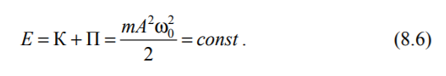
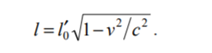
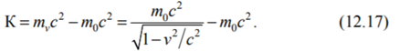
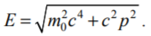
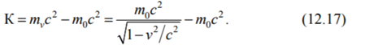
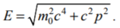
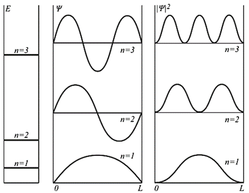
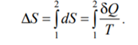

Механика — часть физики, которая изучает закономерности механического движения и причины, вызывающие или изменяющие это движение. Механическое движение — это изменение с течением времени взаимного расположения тел или их частей. Механика Галилея — Ньютона называется классической механикой. В ней изучаются законы движения макроскопических тел, скорости которых малы по сравнению со скоростью света с в вакууме. Законы движения макроскопических тел со скоростями, сравнимыми со скоростью с, изучаются релятивистской механикой, основанной на специальной теории относительности, сформулированной А.Эйнштейном. Для описания движения микроскопических тел (отдельные атомы и элементарные частицы) законы классической механики неприменимы — они заменяются законами квантовой механики. Механика делится на три раздела:
1) кинематику;
2) динамику;
3) статику.
Кинематика изучает движение тел, не рассматривая причины, которые это движение обусловливают. Динамика изучает законы движения тел и причины, которые вызывают или изменяют это движение. Статика изучает законы равновесия системы тел Материальная точка — тело, обладающее массой, размерами которого в данной задаче можно пренебречь. изучение движения произвольной системы тел сводится к изучению системы материальных точек. Любое движение твердого тела можно представить как комбинацию поступательного и вращательного движений. Поступательное движение — это движение, при котором любая прямая, жестко связанная с движущимся телом, остается параллельной своему первоначальному положению. Вращательное движение — это движение, при котором все точки тела движутся по окружностям, центры которых лежат на одной и той же прямой, называемой осью вращения. Положение материальной точки определяется по отношению к какому либо другому, произвольно выбранному телу, называемому телом отсчета. С ним связывается система отсчета — совокупность системы координат и часов. При движении материальной точки ее координаты с течением времени изменяются. Способы: Векторный(r=r(t)), координатный(x=x(t), y=y(t),z=z{t)) и естественный(r=sqrt(x^2+y^2+z^2)) Вектором средней скорости называется отношение приращения радиуса-вектора точки к промежутку времени(1) При неограниченном уменьшении средняя скорость стремится к предельному значению, которое называется мгновенной скоростью(2). Вектор мгновенной скорости – производная вектора движения Физической величиной, характеризующей быстроту изменения скорости по модулю и направлению, является ускорение. ускорение есть векторная величина, определяемая первой производной скорости по времени Среднее ускорение - векторная величина, равная отношению изменения скорости к интервалу времени. Мгновенным ускорением материальной точки в момент времени будет предел среднего ускорения: Полное ускорение тела есть геометрическая сумма тангенциальной и нормальной составляющих. Тангенциальная составляющая ускорения характеризует быстроту изменения модуля скорости (направлена по касательной к траектории), а нормальная составляющая ускорения — быстроту изменения направления скорости (направлена по главной нормали к центру кривизны траектории). Составляющие перпендикулярны друг другу.
2. Поступательное и вращательное движение твердого тела. Угол поворота, угловая скорость, угловое ускорение. Период и частота вращения. Связь между векторами угловых и линейных кинематических величин.
Поступательным называется такое движение твердого тела, при котором любая прямая, неизменно связанная с этим телом, остается параллельной своему начальному положению. Вращательным называется такое движение твердого тела, при котором две его точки остаются неподвижными за все время движения. При этом прямая, проходящая через эти две неподвижные точки, называется осью вращения. Угол поворота – прямая, перпендикулярная оси вращения.
 Угловым ускорением называется векторная величина, определяемая первой производной угловой скорости по времени:
Если w = const, то вращение равномерное и его можно характеризовать периодом вращения Т — временем, за которое точка совершает один полный оборот, т. е. поворачивается на угол 2П.
Число полных оборотов, совершаемых телом при равномерном его движении по окружности в единицу времени, называется частотой вращения
Угловым ускорением называется векторная величина, определяемая первой производной угловой скорости по времени:
Если w = const, то вращение равномерное и его можно характеризовать периодом вращения Т — временем, за которое точка совершает один полный оборот, т. е. поворачивается на угол 2П.
Число полных оборотов, совершаемых телом при равномерном его движении по окружности в единицу времени, называется частотой вращения
 связь между линейными (длина пути s, пройденного точкой по дуге окружности радиусом R, линейная скорость v, тангенциальное ускорение ат , нормальное ускорение ап ) и угловыми величинами (угол поворота ф, угловая скорость ы, угловое ускорение Е) выражается следующими формулами:
связь между линейными (длина пути s, пройденного точкой по дуге окружности радиусом R, линейная скорость v, тангенциальное ускорение ат , нормальное ускорение ап ) и угловыми величинами (угол поворота ф, угловая скорость ы, угловое ускорение Е) выражается следующими формулами:
3. Классификация видов движения материальной точки. Классификация вращательных движений твердого тела.
Различают: а) Прямолинейное движение. При прямолинейном движении центростремительная составляющая ускорения равна нуль(ац=0); б) Криволинейное движение. ац отлично от нуля! ац=v2/R, где R -радиус кривизны траектории. ВРАЩАТЕЛЬНОЕ ДВИЖЕНИЕ: 1) Равномерное вращение – угловая скорость отсается постоянной. W=const. Ускорение равно нулю. Епсилон=0; 2) Равнопеременное вращение Епсилон= w/t=const если угловые скорости w и ускорение епсилон одного знака, то тело вращается ускоренно, а если разного- замедленно.
4. Сила. Масса. Импульс. Законы движения Ньютона. Инерциальные системы отсчета.
1 ЗАКОН НЬЮТОНА. Всякое тело находится в состоянии покоя или равномерно прямолинейно движется, если на него не действуют другие тела или их действие скомпенсировано. Системы отсчета, где действует 1ЗН называются ИНЕРЦИАЛЬНЫМИ. Если СО движется с ускорением относительно инерциальной СО, то она называется НЕИНЕРЦИАЛЬНОЙ СО. Масса – мера инертности тела( кг)- физическая величина, является характеристикой материи. Сила- это физическая векторная величина, является мерой механического воздействия на тело со стороны других тел или полей. В результате чего тело приобретает какое-то ускорение или изменяет свои параметры. Импульс- векторная физ.величина численно равная произведению массы тела на его скорость. (количество движения) p=mv. 2 ЗАКОН НЬЮТОНА. Основной закон динамики поступательного движения – отвечает на вопрос как изменяется мех.движение тела М.Т. под действием приложенных к ней сил. F=ma. 3 ЗАКОН НЬЮТОНА. Действие всех сил, приложенных к телу скомпенсировано, т.е силы действия равны по значению и противоположны по знаку силам противодействия, действуют вдоль одной прямой. F12=-F21.
5. Преобразование Галилея. Классический закон сложения скоростей. Принцип относительности в классической механике.
Преобразования Галилея позволяют перейти от описания материальной точки в одной системе отсчета к описанию ее движения в другой СО. Никакими опытами нельзя точно установить в ИНЕРЦИАЛЬНОЙ СО движется ли данное тело прямолинейно или же оно покоится. В классической механике справедлив принцип относительности Галилея- законы механики одинаковы во всех инерциальных СО.
6. Механическая система. Закон изменения импульса механической системы. Закон сохранения импульса. Центр масс механической системы. Теорема о движении центра масс.
Механическая система- это совокупность материальных точек, выделенных для конкретной задачи. Закон изменения импульса механической системы: скорость изменения импульса МС= векторной сумме всех внешних сил, действующих на эту систему: Закон сохранения импульса: Импульс МС не изменяется с течение времени, если векторная сумма внешних сил остается постоянной Центром масс СМТ- называется воображаемая точка, положение которой характеризуется определением массы этой системы и R-вектор определяется выражением: ТЕОРЕМА О ДВИЖЕНИИ ЦЕНТРА МАСС: Центр масс МС движется как МТ, в которой сосредоточена масса всей Системы и на которую действует сила F, равная векторной сумме всех внешних сил, приложенных к системе.
7. Работа силы. Мощность силы. Работа силы при поступательном перемещении и вращении твердого тела. Кинетическая энергия. Теорема об изменении кинетической энергии Кинетическая энергия твердого тела при его поступательном и вращательном движении.
Работой постоянной силы на прямом участке пути- называется физическая величина численно равная скалярному произведению вектора силы на вектoр перемещения A=F*r; A=F*S*cosα; Мощность- это отношение элементарной работы совершаемой силой F ха малый промежуток времени, к величине этого промежутка N=δA/δt
Кинетическая энергия системы - это энергия механического движения этой системы, зависящая от скоростей МТ и не зависящая от их расположения в пространстве K=(mv^2)/2 ;
Кинетическая энергия вращательного движения тела: K=(I_z w^2)/2; где Iz- момент инерции
Теорема об изменении Кинетической энергии : K2-K1=A12+A’12
8. Виды силовых взаимодействий. Потенциальная энергия. Консервативные и диссипативные силы. Полная механическая энергия. Закон сохранения механической энергии.
А) Закон всемирного тяготения: F=G*(m_1*m_2)/R^2 ; б) Сила тяжести: F=mg ; в)сила упругости: F=kdx ; г) Сила трения: F=Nµ ; Потенциальная энергия – механическая энергия системы тел, определяемая их взаимным расположением и характером сил взаимодействия между ними. A12=П1-П2 ; П=mgh; Консервативные силы - силы, действующие на материальную точку, когда работа этих сил зависит от начального и конечного положения этой точки и не зависит от вида траектории, по которой точка двигалась. Диссипативные силы- это силы, работа которых всегда отрицательна и приводит к уменьшению энергии МС (сила трения, сила сопротивления) Полная механическая энергия: K2+П2=К1+П1 Закон Сохранения механической энергии - фундаментальный закон природы, связан с однородностью времени-не зависит от выбора точки начала отсчета : А12=К2-К1;
9. Момент силы. Момент импульса материальной точки и системы материальных точек. Уравнение моментов. Закон сохранения моментов импульса
Моментом силы относительно неподвижной точки О называется векторное произведение радиуса-вектора r, проведённого из точки О в точку приложения силы, на вектор силы F:
M = r*F
Вектор момента силы M направлен перепендикулярно плоскости векторов r и F по правилу правого винта (рис 6.1)
Вектор момента силы определяется выражением
M = F*r*sin@ = Fh (6.2)
где @ - угол между векторами r и F; h = r*sin@ - плечо силы.
Плечом силы называется длина перепендикуляра, опущенного из точки О на линию действия силы F.
Моментом импульса материальной точки относительно неподвижной точки О называется векторное произведение радиуса-вектора r материальной точки, проведённого из точки О, на импульс этой материальной точки p:
L = r*p = r*mv, (6.3)
где, m и v - масса и скокрость материальной точки. Вектор момента импульса L направлен перепендикулярно каждому из перемножаемых векторов r и p в соответствии с правилом правого винта (рис. 6.2)

Полученное уравнение называется уравнение моментов для материальной точки или теоремой от изменении момента импульса материальной точки.
Рассмотрим механическую систему, состоящую из n материальных точек. Пусть Mi и Vi - масса и скорость i-ой точки системы. Моментом импульса механической системы относительно неподвижной точки О называется вектор, равный векторной сумме моментов импульса всех материальных точек системы относительно той же точки О:
Уравнение (6.9) представляет собой уравнение моментов для механической системы. Это уравнение называют теоремой об изменении момента импульса механической системы
Закон сохранение моментов импульса: момент импульса механической системы не изменяется с течением времени, если суммарный момент внешних сил, действующих на систему равен нулю: Этот закон выполняется в том числе и для замкнутых механических систем, тогда он формулируется следующим образом: момент импульса замкнутой системы не изменяется с течением времени.
10. Основное уравнение динамики вращательного движения твердого тела относительно неподвижной оси. Момент силы относительно оси. Момент импульса твердого тела относительно оси. Момент инерции материальной точки, системы материальных точек и тела относительно оси. Сопоставление закономерностей поступательного и вращательного движений.
Уравнение (6.53) представляет собой уравнение динамики вра-щательного движения твердого тела относительно неподвижной оси. По своему физическому смыслу это уравнение аналогично второму закону Ньютона для движения материальной точки. При этом можно заметить соответствие между линейным а(вектор) и угловым E(эдс) ускорениями, между силой F и проекцией момента силы Мс и между массой m и моментом инерции Iz. Отсюда следует важный вывод, что момент инерции те ла относительно оси является мерой инертности тела при вращательном движении подобно тому, как масса является мерой инертности тела при поступательном движении. Момент силы F относитель но оси 2 равен моменту ее перпен- дикулярной к оси составляющей F_|_, относительно точки О, находя- щейсяся на оси z (рис. 6.3): где h — плечо силы F_|_, относительно точки О (заштрихованный треугольник расположен в горизонтальной плоскости); М_z - ал гебраическое значение момента силы относительно оси z, кото рое равно проекции вектора М_o, на эту ось. Отсюда следует пра вило знаков для М_z: если, наблюдая с конца оси z, поворот под действием силы F_|_, происходит против часовой стрелки (как на рис. 6.3), то момент М_z считается положительным, иначе — от рицательным. В частном случае, если сила F параллельна оси z, то ее пер пендикулярная проекция F_|_ = 0 и, следовательно, момент силы F относительно этой оси равен нулю. Модуль момента импульса тела относительно оси О равен сум ме моментов импульсов всех частиц тела (свойство аддитивности): Моментом инерции материальной точки массой m, располо женной на расстоянии R от оси z , называется величина
I_z = m*R^2 .
11. Моменты инерции твердых тел. Аддитивность момента инерции. Теорема Штейнера. Применение свойства аддитивности и теоремы Штейнера для расчета моментов инерции твердых тел.
Таким образом, моментом инерции твердого тела от- носительно оси z называется скалярная величина, равная сумме произведений масс частиц тела на квадраты их расстояний до оси z.
Первое свойство — это аддитивность — момент инер ции тела относительно некоторой оси равен сумме момен тов инерции составных частей этого тела относительно этой же оси.
Второе свойство — это теорема Штейнера', которая формулируется следующим образом: момент инерции те ла относительно некоторой оси z равен моменту инерции I_zc относительно параллельной оси Z_c, проходящей через центр масс тела, сложенному с произведением массы тела на квадрат расстояния между осями: Применение совйства аддитивности и теоремы Штейнера Центр масс стержня расположен на его середине. Момент инер- ции стержня относительно оси, проходящей перпендикулярно стерж- ню через его середину, определяется выражением (7.11): Расстояние между осями равно половине длины стержня d =1/2. Тогда, применяя теорему Штейнера, получаем:
 Приведя к общему знаменателю, получаем искомое выражение
для момента инерции тонкого стержня относительно оси, проходящей
перпендикулярно стержню через один из его концов:
=
Приведя к общему знаменателю, получаем искомое выражение
для момента инерции тонкого стержня относительно оси, проходящей
перпендикулярно стержню через один из его концов:
=
12. Механические колебания и их характеристики. Уравнение гармонических колебаний. Скорость, ускорение и энергия точки при гармонических колебаниях.
Колебательным движением (механическими колебаниями) называется движение тела, характеризующееся той или иной степенью повторяемости во времени. Примерами колебательного движения являются колебания маятников, струн, частей машин и механизмов, зданий, мостов и других сооружений, качка корабля, волнение моря, деформации тел при распространении звука. Свободными (собственными) называются колебания, происходящие в отсутствие переменных внешних воздействий на колеба тельную систему и возникающие вследствие какого-либо начального отклонения этой системы от состояния устойчивого равновесия. Вынужденными называются колебания, которые возникают в какой либо системе под влиянием переменного внешнего воздействия. Колебания называются периодическими , если значения всех фи- зических величин, характеризующих колебательную систему, повто ряются через равные промежутки времени. Наименьший промежуток времени Т, через который повторяется значение колеблющейся вели чины, называется периодом колебаний . За время равное периоду ко лебаний колебательная система совершает одно полное колебание. Частотой колебаний называется величина v=1/Т, равная числу полных колебаний, совершаемых за единицу времени. Простейшим типом периодических колебаний, являются гармонические колебания — колебания, при которых колеблющаяся величина изменяется по закону синуса или косинуса. Гармонические колебания величины s описываются следующим уравнением: где А — максимальное значение колеблющейся величины, называемое амплитудой колебаний , (омега_о * t + Фо) - фаза колебаний, Фо - цикли ческая частота , Фо — начальная фаза колебаний , т. е. фаза колебаний в начальный момент времени t = 0.
Получим выражение для скорости и ускорения точки, совершающей гармонические колебания: Определим кинетическую и потенциальную энергии колеблющейся точки: Полученные выражения показывают, что кинетическая и потенциальная энергия изменяются гармонически от (0 до m * A^2 * омега_о^2) / 2 с циклической частотой 2 * омега_о. При этом сдвиг по фазе между колебаниями кинетической и потенциальной энергией составляет пи, так что полная механическая энергия колеблющейся точки не изменяется с течением времениЖ 
13. Пружинный, физический и математический маятники. Дифференциальное уравнение свободных гармонических колебаний.
Пружинный маятник , представляет собой груз, подвешенный на упругой пружине и совершающий кодебания под действием силы упругости (рис 8.2). Дифференциальное уравнение колебаний пружинного маятника Решение этого уравнения имеет вид т.е в точности соответствует уравнению гармонических колебаний (8.1), причём циклическая частота омега_о определяется выражением Из уранения (8.9) следует, что сила тяжести mg не оказыввает влияние на движение пружинного маятника. Следовательно, можно говорить о том, что пружинный маятник совершает колебания лишь только под дейтсвием упругой силы. Знак "минус" показывает, что сила упругости направлена противоположно направлению смещения тела и стремится вернуть тело в состояние равновессия. Поэтому силу, определяемую выражением (8.12), называют квазиупругими . Материальная точка, колеблющаяся под действием возвращающей силы, называется гармоническим осцилятором . Сопоставив выражения (8.9) и (8.11), можно получить Дифференциальное уравнение гармонического осциллятора для колеблющейся величины s: Физическим маятником называется твёрдое тело, совершающее под действием силы тяжести колебания вокруг неподвижной горизонтальной оси, которая не проходит через центр масс маятника. На рис. 8.3 показан физический маятник, центр масс которого расположен в точке С, а горизонтальная ось z, называемая осью качаний, проходит через точку О перпендикулярно плоскости рисунка.
Дифференциальное уравнение колебаний физического маятника: где I_z - момет инерции маятника относительно оси качаний z
Уравнение (8.15) не соответствует дифференциальному уравнению гармонических колебаний (8.13), поэтому колебания физического маятника не являются гармоническими. Но если маятник совершает малые колебания, то sin@ = @ и уравнение (8.15) сводится к дифференциальному уравнению гармонических колебаний решение которого имеет следующий вид: Из сопоставления уравнений (8.16) и (8.13) получаем выражение для циклической частоты омега_о и периода T_o малых колебаний физического маятника: Математическим маятником называется материальная точка, подвешенная на невесосмой нерастяжимой нити и совершающая колебания в вертикальной плоскости под действием силы тяжести. Математический маятник мржно рассматривать как частный случай физического маятника, вся масса которого сосредоточена в одной точке. Подставляя момент инерции материальной точки I_z = m * l^2_0 в формулы (8.18), получаем выражения для циклической частоты и периода малых колебаний математического маятника:
14.Затухающие колебания. Дифференциальное уравнение вынужденных колебаний. Амплитуда затухающих колебаний. Коэффициент затухания и время релаксации. Периодические и апериодическое затухание.
Затухающими называются колебания, амплитуда которых уменьшается с течением времени из-за потерь энергии в колебательной системе. Дифференциальное уравнение затухающих колебаний: Это уравнение обычно записывают в виде где В - коэффициент затухания , опеределяемый для данной механической системы выражением омега_о - собственная частота колебательной системы, т.е такая частота с которой происходили бы колебания при отсутствии затухания. омега_о - циклическая частота затухающих колебаний, которая может быть определна по формуле
(8.26)
Решением дифракционного уравнения затухаяющих колебаний является следующее выражение для координаты x:
(8.24)
которое получило название уравнение затухающих колебаний. Временем редаксации t затухающих колебаний называется промежуток времени, за который амплитуда затухающих коледаний уменьшается в е раз (е= 2.72 - основание натурального логарифма). Коэффициент затухания – это величина обратная времени релаксации.
15. Вынужденные колебания. Дифференциальное уравнение затухающих колебаний. Амплитуда и фаза вынужденных колебаний. Резонанс.
Вынужденными называются колебания, которые возникают в какой-либо системе под влиянием переменного внешнего воздействия. Сила, производящая переменное воздействие на колебательную систему, получила название вынуждающей силы. В самом простом случае вынуждающая сила изменяется с течением времени по гармоническому закону где F0 – амплитуда вынуждающей силы; Ω – циклическая частота вынуждающей силы. Дифференциальное уравнение вынужденных колебаний Явление увеличения амплитуды вынужденных колебаний при приближении частоты вынуждающей силы к собственной частоте осциллятора называется резонансом. Доделаю позже,пока не нашел
16. Распространение колебаний в упругой среде .Уравнение волны. Фазовая скорость, волновой вектор, длина волны. Звуковые волны.
Явление распространения колебаний в сплошной среде называется упругой волной В зависимости от направления колебаний частиц среды различают поперечные и продольные волны. Продольными называются волны, в которых частицы колеблются вдоль направления распространения вол ны. Таковыми являются, например, звуковые волны. Поперечными называются волны, в которых частицы совершают колебания перпен дикулярно направлению распространения волны. Например, упоми навшаяся ранее волна на поверхности водоема является поперечной. Часто уравнение плоской бегущей волны записывают в следующем виде: k-волновое число
Если волна распространяется не вдоль оси х, а в произвольном направлении, определяемом единичным вектором нормали к волновой поверхности n(вектор), то уравнение волны можно записать в следующем виде:
(10.8) где К - волновой вектор, направленный по нормали к волновой по верхности, его модуль равен волновому числу К, т.е. k = k * n; Уравнение бегущей сферической волны Скорость перемещения волны , называемая фазовой скоростью волны vφ Длиной волны (лямбда) называется расстояние, на которое перемещается волновая поверхность по направлению собственной нормали за время, равное периоду колебаний частиц среды: Звуковыми (или акустическими волнами) называются распро страняющиеся в среде упругие волны, обладающие частотами v в пре делах 16-20 000 Гц. Волны указанных частот, воздействуя на слухо- вой аппарат человека, вызывают ощущение звука. Волны с v < 16 Гц (инфразвуковые) и v > 20 кГц (ультразвуковые) органами слуха че ловека не воспринимаются.
17.Постулаты специальной теории относительности. Преобразования Лоренца. Релятивистский закон сложения скоростей. Относительность расстояний и промежутков времени.
Постулаты: 1.никакие опыты (механические, электрические, оптические и т. д.), проведенные в данной инерциальной системе отсчета, не дают возможности обнаружить, покоится ли эта система отсчета или движется прямолинейно и равномерно 2. скорость света в вакууме не зависит от скорости движения источника света или наблюдателя и одинакова во всех инерциальных системах отсчета. Прямые и обратные преобразования Лоренца для этих систем отсчёта имеют следующий вид: Релятивистский закон сложения скоростей Относительность расстояний  Таким образом, l < l'_0, т.е. длина стержня, измеренная в системе отсчета, относительно которой он движется, будет меньше длины стержня в его собственной системе отсчета, относительно которой он. неподвижен. Собственная длина стержня максимальна. Относительность времени Таким образом, t’ > t_о, т.е. длительность события, происходяще го в некоторой точке, наименьшая в той инерциальной системе отсче та, относительно которой эта точка неподвижна. Другими словами, часы, движущиеся вместе с системой отсчета К', покажут меньшую длительность события происходящего в этой системе отсчета, чем часы в неподвижной системе отсчета К, что означает, что часы в дви жущейся системе отсчета замедляют свой ход.
18. Релятивистский импульс. Релятивистская масса. Релятивистское выражения для кинетической энергии. Энергия покоя и полная энергия в релятивистской механике. Соотношение между полной энергией и импульсом частицы.
 
Первый член в формуле (12,17) называется полной энергией релятивистской частицы Е, а второй член - её энергией покоя Е_о т.е
Из уравнения (12.20) легко получить выражение, связывающее релятивистский импульс и полную энергию материальной точки:


Первый член в формуле (12,17) называется полной энергией релятивистской частицы Е, а второй член - её энергией покоя Е_о т.е
Из уравнения (12.20) легко получить выражение, связывающее релятивистский импульс и полную энергию материальной точки:

19. Гипотеза Луи Де Бройля. Соотношение неопределенностей Гейзенберга. Волновая функция. Уравнение Шредингера. Решение уравнения Шредингера для свободной частицы.
Е = h * v Луи де Бройль выдвинул гипотезу, что дуализм не является особенностью только оптических явлений, а имеет универсальный характер. Частицы вещества также обладают волновыми свойствами., Если фотон обладает энергией и импульсом, p = h / (лямбда) то и частица (например, электрон), движущаяся с некоторой скоростью, обладает волновыми свойствами, т.е. движение частицы можно рассматривать как движение волны. Согласно квантовой механике, свободное движение частицы с массой m и импульсом
p = m * v
(где υ – скорость частицы) можно представить, как плоскую монохроматическую волну (волну де Бройля) с длиной волны. Зависимость волновой функции от координаты х даётся формулой где K_o – волновое число, а вектор K_o волновой вектор направлен в сторону распространения волны или вдоль движения частицы: Соотношение неопределенностей Гейзенберга. Согласно представлению Гейзенберга, объект микромира невозможно наперед с заданной точностью характеризовать координатами и импульсом. Энергия и время являются канонически сопряженными величинами. Поэтому для них также справедливо соотношение неопределенностей: Соотношение неопределенностей получено при одновременном использовании классических характеристик движения частицы (координаты, импульса) и наличии у нее волновых свойств. Т.к. в классической механике принимается, что измерение координаты и импульса может быть произведено с любой точностью, то соотношение неопределенностей является, таким образом, квантовым ограничением применимости классической механики к микрообъектам. Соотношение неопределенностей указывает, в какой мере возможно пользоваться понятиями классической механики применительно к микрочастицам, в частности с какой степенью точности можно говорить о траекториях микрочастиц. Движение по траектории характеризуется вполне определенными значениями координат и скорости в каждый момент времени. Подставив в вместо P_x произведение mv_x , получим соотношение:
 Из этого соотношения следует, что чем больше масса частицы, тем меньше неопределенности ее координаты и скорости, следовательно тем с большей точностью можно применять к этой частице понятие траектории. Так, например, уже для пылинки массой кг и линейными размерами м, координата которой определена с точностью до 0,01 ее размеров ( м), неопределенность скорости, по
т.е. не будет сказываться при всех скоростях, с которыми пылинка может двигаться.
Таким образом, для макроскопических тел их волновые свойства не играют никакой роли; координаты и скорости могут быть измерены достаточно точно. Это означает, что для описания движения макротел с абсолютной достоверностью можно пользоваться законами классической механики.
Предположим, что пучок электронов движется вдоль оси x со скоростью v = 10^8 м/с, определяемой с точностью до 0,01% ( (Δ V_x = 10^4 ) м/с). Какова точность определения координаты электрона?
По формуле получим:
Таким образом, положение электрона может быть определено с точностью до тысячных долей миллиметра. Такая точность достаточна, чтобы можно было говорить о движении электронов по определенной траектории иными словами, описывать их движения законами классической механики.
Применим соотношение неопределенностей к электрону, двигающемуся в атоме водорода. Допустим, что неопределенность координаты электрона Δ х = 10^-10 м (порядка размеров самого атома), тогда, согласно формуле:
Используя законы классической физики, можно показать, что при движении электрона вокруг ядра по круговой орбите радиуса приблизительно 0.5 * 10^-10 м его скорость v = 2.3 * 10^6 м/с. Таким образом, неопределенность скорости в несколько раз больше самой скорости. Очевидно, что в данном случае нельзя говорить о движении электронов в атоме по определенной траектории. Иными словами, для описания движения электронов в атоме нельзя пользоваться законами классической физики.
Волновая функция.
В квантовой механике состояние микрочастицы описывается с помощью волновой функции:
Из этого соотношения следует, что чем больше масса частицы, тем меньше неопределенности ее координаты и скорости, следовательно тем с большей точностью можно применять к этой частице понятие траектории. Так, например, уже для пылинки массой кг и линейными размерами м, координата которой определена с точностью до 0,01 ее размеров ( м), неопределенность скорости, по
т.е. не будет сказываться при всех скоростях, с которыми пылинка может двигаться.
Таким образом, для макроскопических тел их волновые свойства не играют никакой роли; координаты и скорости могут быть измерены достаточно точно. Это означает, что для описания движения макротел с абсолютной достоверностью можно пользоваться законами классической механики.
Предположим, что пучок электронов движется вдоль оси x со скоростью v = 10^8 м/с, определяемой с точностью до 0,01% ( (Δ V_x = 10^4 ) м/с). Какова точность определения координаты электрона?
По формуле получим:
Таким образом, положение электрона может быть определено с точностью до тысячных долей миллиметра. Такая точность достаточна, чтобы можно было говорить о движении электронов по определенной траектории иными словами, описывать их движения законами классической механики.
Применим соотношение неопределенностей к электрону, двигающемуся в атоме водорода. Допустим, что неопределенность координаты электрона Δ х = 10^-10 м (порядка размеров самого атома), тогда, согласно формуле:
Используя законы классической физики, можно показать, что при движении электрона вокруг ядра по круговой орбите радиуса приблизительно 0.5 * 10^-10 м его скорость v = 2.3 * 10^6 м/с. Таким образом, неопределенность скорости в несколько раз больше самой скорости. Очевидно, что в данном случае нельзя говорить о движении электронов в атоме по определенной траектории. Иными словами, для описания движения электронов в атоме нельзя пользоваться законами классической физики.
Волновая функция.
В квантовой механике состояние микрочастицы описывается с помощью волновой функции: ψ(x, y, z, t)
Волновая функция сама по себе не имеет смысла, физический смысл имеет:
| ψ |^2
который представляет собой вероятность обнаружения частицы в единичном объеме в окрестности точки пространства (x, y, z) в момент времени t. Волновая функция полностью определяет все физические характеристики квантовой системы. Так среднее наблюдаемое значение физической величины F у системы дается выражением где F - оператор этой величины и интегрирование проводится по всей области многомерного пространства. В качестве независимых переменных волновой функции вместо координат частиц x, y, z могут быть выбраны их импульсы px, py, pz или другие наборы физических величин. Этот выбор зависит от представления (координатного, импульсного или другого). Уравнение Шредингера Уравнение Шредингера играет в квантовой механике такую же роль, как и второй закон Ньютона в классической механике. В стационарном состоянии
Ψ (x, y, z, t) = ψ(x, y, z)e^-iEt/ћ.
Так как вероятность найти частицу в момент t в точке x, y, z пропорциональна |Ψ(x, y, z, t )|2 , то в данном случае она ~ |ψ (x, y, z)|2, т.е. не зависит от времени. Аналогично, вероятность обнаружить значение физической величины, характеризующей систему, также не изменяется со временем, т.к. выражается через квадраты модулей волновых функций. Уравнение Шредингера для стационарного состояния, когда потенциальная энергия частицы явным образом не зависит от времени, имеет вид
hψ(x, y, z) = Eψ(x, y, z).
Это уравнение называют стационарным уравнением Шредингера. Решение уравнения Шредингера для свободной частицы. Свободная частица – частица, движущаяся в отсутствие внешних полей. Т.к. на свободную частицу (пусть она движется вдоль оси x) силы не действуют, то потенциальная энергия частицы V(x) = const и ее можно принять равной нулю. Тогда полная энергия частицы совпадает с ее кинетической энергией. В таком случае уравнение Шредингера для стационарных состояний примет вид: Прямой подстановкой можно убедиться в том, что частным решением уравнения является функция ψ(x)=Ae^(i kx) , где A = const и k = const , с собственным значением энергии:
20. Решение уравнения Шредингера для частицы в потенциальной яме с бесконечно высокими стенками. Квантовые энергии. Понятие о туннельном эффекте.
Потенциальная энергия U(x) в прямоугольной яме удовлетворяет следующим условиям: Частица находится в области 0 ≤ x ≤ L. Вне этой области ψ(x) = 0. Уравнение Шредингера для частицы, находящейся в области 0 ≤ x ≤ L Прямоугольная яма с бесконечными стенками
Волновая функция, являющаяся решением уравнения имеет вид
ψ(x)= Аsin kx + Bcos kx,
где k = (2mE/ћ2)1/2. Из граничных условий ψ(0) = 0, ψ(L) = 0 и условий непрерывности волновой функции следует
Аsin kL = 0. (4.8)
kL = nπ, n = 1, 2, 3, … , то есть внутри потенциальной ямы с бесконечно высокими стенками устанавливаются стоячие волны, а энергия состояния частиц имеет дискретный спектр значений En
n = 1, 2, 3, …
Частица может находиться в каком-то одном из множества дискретных состояний, доступных для неё.
Каждому значению энергии En соответствует волновая функция ψn(x), которая с учетом условия нормировки имеет вид
 В отличие от классической, квантовая частица в прямоугольной яме не может иметь энергию E < ћ^2π^2/(2mL^2). Состояния частицы ψn в одномерном поле бесконечной потенциальной ямы полнос¬тью описывается с помощью одного квантового числа n. Спектр энергий дискретный. Уровни энергии и волновые функции частицы Ψ в бесконечной прямоугольной яме. Квадрат модуля волновой функции |Ψ|^2 определяет вероятность нахождения частицы в различных точках потенциальной ямы. Квантование энергии молекул. Полная энергия изолированной молекулы может быть представлена как сумма следующих компонентов: Е = Епост. + Евр. + Екол. + Еэл. +Еяд. (1) где: Епост. = энергия поступательного движения молекулы как целого, Евр. = энергия вращательного движения молекулы как целого, Екол. = энергия колебаний атомов в молекуле, Еэл. = энергия совокупности всех электронов в молекуле (т.е. энергия электронных состояний), Еяд. = энергия нуклонов, составляющих ядра атомов молекулы. Эта величина не представляет интереса для химиков, поскольку всегда остается постоянной при химических превращениях. Энергия поступательного движения может принимать любые значения, в зависимости от температуры, т.е. не квантуется. Все остальные составляющие полной энергии квантуются, т.е. могут принимать не любые, а строго определенные величины, зависящие от структуры молекулы. Говорят, что молекула может находиться в некотором энергетическом состоянии. Состояние с наименьшей энергией называется основным, а все остальные - возбужденными. Для перехода из основного в некоторое возбужденное состояние молекула должна получить извне количество энергии Е, соответствующее по величине разнице в энергиях между основным и соответствующим возбужденным состоянием. Если эта поступающая извне энергия подается на молекулу в виде электромагнитного излучения частоты ν, то должно соблюдаться условие Бора ΔЕ = h ν (h = 6,626*10-34 Дж/с - постоянная Планка), и на этом основана молекулярная спектроскопия - комплекс физических методов исследования, с помощью которых химики получают наиболее важные сведения о строении молекул. Туннельный эффект Туннельный эффект (туннелирование) – прохождение частицы (или системы) сквозь область пространства, пребывание в которой запрещено классической механикой. Наиболее известный пример такого процесса – прохождение частицы сквозь потенциальный барьер, когда её энергия Е меньше высоты барьера Uo. В классической физике частица не может оказаться в области такого барьера и тем более пройти сквозь неё, так как это нарушает закон сохранения энергии. Однако в квантовой физике ситуация принципиально другая. Квантовая частица не движется по какой-либо определенной траектории. Поэтому можно лишь говорить о вероятности нахождения частицы в определенной области пространства ΔрΔх > ћ. При этом ни потенциальная, ни кинетическая энергии не имеют определенных значений в соответствии с принципом неопределенности. Допускается отклонение от классической энергии Е на величину ΔЕ в течение интервалов времени t, даваемых соотношением неопределённостей ΔЕΔt > ћ (ћ = h/2π, где h – постоянная Планка). Возможность прохождения частицы сквозь потенциальный барьер обусловлена требованием непрерывной волновой функции на стенках потенциального барьера. Вероятность обнаружения частицы справа и слева связаны между собой соотношением, зависящим от разности E - U(x) в области потенциального барьера и от ширины барьера x1 - x2 при данной энергии.
 С увеличением высоты и ширины барьера вероятность туннельного эффекта экспоненциально спадает. Вероятность туннельного эффекта также быстро убывает с увеличением массы частицы.
Проникновение сквозь барьер носит вероятностный характер. Частица с Е < U0, натолкнувшись на барьер, может либо пройти сквозь него, либо отразиться. Суммарная вероятность этих двух возможностей равна 1. Если на барьер падает поток частиц с Е < U0, то часть этого потока будет просачиваться сквозь барьер, а часть – отражаться. Туннельное прохождение частицы через потенциальный барьер лежит в основе многих явлений ядерной и атомной физики: альфа-распад, холодная эмиссия электронов из металлов, явления в контактном слое двух полупроводников и т.д.
С увеличением высоты и ширины барьера вероятность туннельного эффекта экспоненциально спадает. Вероятность туннельного эффекта также быстро убывает с увеличением массы частицы.
Проникновение сквозь барьер носит вероятностный характер. Частица с Е < U0, натолкнувшись на барьер, может либо пройти сквозь него, либо отразиться. Суммарная вероятность этих двух возможностей равна 1. Если на барьер падает поток частиц с Е < U0, то часть этого потока будет просачиваться сквозь барьер, а часть – отражаться. Туннельное прохождение частицы через потенциальный барьер лежит в основе многих явлений ядерной и атомной физики: альфа-распад, холодная эмиссия электронов из металлов, явления в контактном слое двух полупроводников и т.д.
21.Идеальный газ. Уравнение состояния идеального газа. Законы идеального газа.
Идеальным газом называется газ, в котором собственным объемом молекул и межмолекулярным взаимодействием можно пренебречь. Другими словами, это большие совокупности невзаимодействующих материальных точек, которые при своем движении сталкиваются между собой и со стенками сосуда, в который они заключены, по законам соударения абсолютно упругих шаров.
Уравнение состояния. Состояние заданной массы газа определяется значениями трех параметров: давления p, объема V и температуры T. Эти параметры связаны друг с другом, так что изменение одного из них влечет за собой изменение других. Соотношение, определяющее связь между параметрами какой-либо системы, называется уравнением состояния этой системы. Уравнение состояния идеального газа (уравнение Менделеева - Клапейрона) имеет вид:
pV= vRT
Законы идеального газа.
Газовые законы первоначально были открыты экспериментально. Они устанавливают связь между параметрами для определенной массы газа в изопроцессах (процессах, при которых один из параметров не изменяется).
Изотермическим называется процесс, проходящий при постоянной температуре. Из уравнения (1.10) при T = const и неизменяющемся количестве газа следует закон Бойля-Мариотта:
pV = const.
Кривая на p,V-диаграмме, соответствующая изотермическому процессу, называется изотермой. Согласно формуле давление газа обратно пропорционально объему при T = const. Поэтому газовые изотермы представляют собой гиперболы (рис. 1.2). Чем выше температура, тем дальше от координатных осей расположена соответствующая изотерма.
Изобарный называется процесс, проходящий при неизменном давлении. Из уравнения (1.10) при p = const и неизменяющемся количестве газа следует закон Гей-Люссака:
V / T = const.
Линия на V,T-диаграмме, соответствующая изобарическому процессу, называется изобарой. Согласно формуле объем газа линейно зависит от температуры, поэтому изобары представляют собой прямые линии. Наклон этих линий определяется константой в выражении, которая обратно пропорциональна давлению.
Изохорный называется процесс, при котором объем газа не изменяется. Из уравнения (1.10) при V = const и неизменяющемся количестве газа следует закон Шарля:
p / T = const.
Линия на p,T-диаграмме, соответствующая изохорическому процессу, называется изохорой. Согласно формуле давление газа линейно зависит от температуры, поэтому изохоры представляют собой прямые линии. Наклон этих линий определяется константой в выражении, которая обратно пропорциональна объему.
Адиабатическим называется процесс, протекающий без теплообмена с внешней средой, так что количество теплоты, полученное или отданное системой, Q = 0. К адиабатическим процессам можно отнести все быстро протекающие процессы, например, процесс распространения звука в упругой среде. В этом случае сжатие и расширение, происходящие в каждой точке среды, осуществляются настолько быстро, что теплообмен со средой не успевает произойти. Для создания адиабатичности на больших промежутках времени систему обычно теплоизолируют.
С учетом того, что при адиабатическом процессе ðQ = 0, первое начало термодинамики примет вид:
Проинтегрировав последнее равенство, получим: \
22.Внутренняя энергия термодинамической системы. Работа и теплота. Теплоемкость вещества. Первое начало термодинамики.
Под внутренней энергией U понимают энергию, заключенную внутри макросистемы. Она включает в себя: 1) кинетическую энергию хаотического движения молекул; 2) потенциальную энергию взаимодействия между молекулами, принадлежащими данной системе; 3) внутреннюю энергию самих молекул, атомов, ядер. Внутренняя энергия рассматривается в термодинамике как особая форма энергии, способная к превращениям в другие формы, например в механическую - кинетическую или потенциальную - энергию.
Работа и теплота.
Внутреннюю энергию макросистемы можно изменить, совершив над системой работу А' внешними силами, либо путем теплопередачи. Обычно рассматривают не работу А' над системой, а работу А, производимую самой системой над внешними телами, учитывая, что А' = -А. Совершение работы сопровождается перемещением внешних тел, действующих на систему. Так, например, ведет себя поршень в цилиндре с газом (см. ниже). Если объем макросистемы получает приращение dV, а давление, оказываемое ею на соседние тела, равно p, то элементарная работа сил, действующих со стороны системы на внешние тела Это легко получить для случая, когда система (газ) находится в цилиндре с поршнем. Элементарная работа, совершаемая газом при перемещении поршня на dh, равна ðА = Fdh, где F – сила, с которой газ действует на поршень. Площадь сечения поршня S, поэтому F = pS и ðА = pSdh = pdV, где dV = Sdh – изменение объема газа.
Работа, совершаемая системой при конечных изменениях объема от V1 до V2, будет равна сумме элементарных работ, т. е. представится в виде интеграла: Причем, поскольку давление может изменяться в процессе выполнения работы, его нельзя выносить из-под знака интеграла. Принимая во внимание геометрический смысл интеграла, работа численно равна площади под графиком p(V) зависимости давления от объема
Теплоемкость вещества. Теплоемкостью какого-либо тела называют количество тепла, которое нужно сообщить телу, чтобы изменить его температуру на один кельвин. Если при сообщении телу тепла ðQ его температура изменилась на dT, то теплоемкость по определению равна: Единица измерения этой величины - джоуль на кельвин: [C.тела] = Дж/К. Теплоемкость тела зависит от его массы. Поэтому на практике пользуются удельной и молярной теплоемкостями. Удельной теплоемкостью называют теплоемкость единицы массы вещества. Если тело, имеющее теплоемкость C.тела, имеет массу m, то, согласно определению, удельная теплоемкость (будем обозначать ее строчной буквой c) Единица измерения удельной теплоемкости - джоуль на килограмм-кельвин: [с] = Дж/(кг * К).
Молярной теплоемкостью называют теплоемкость одного моля вещества. Если ν молей вещества обладают теплоемкостью Cтела, то, согласно определению, молярная теплоемкость (будем обозначать ее прописной буквой C) Единица измерения молярной теплоемкости - джоуль на моль-кельвин: [С] = Дж/(моль * К). Первое начало термодинамики. Согласно закону сохранения энергии, она не возникает и не исчезает, а только переходит из одной формы в другую или от одной физической системы к другой. Первое начало (закон) термодинамики математически выражает количественную сторону закона сохранения и превращения энергии. Его можно сформулировать следующим образом: приращение внутренней энергии ΔU=U2 - U1 макросистемы при ее переходе из начального состояния в конечное равно сумме совершенной над системой работы А' всех внешних сил и количества переданного системе тепла Q: Имея в виду, что А' = -А, перепишем выражение в виде: Это уравнение и выражает первое начало термодинамики: количество теплоты Q, сообщенное макросистеме, идет на приращение ΔU ее внутренней энергии и на совершение системой работы А над внешними телами. Все входящие в формулу величины являются алгебраическими, т. е. могут иметь как положительные, так и отрицательные значения. Если Q < 0, то это значит, что тепло отводится от системы, если A < 0, то работа производится над системой. Приращение ΔU внутренней энергии может иметь любой знак, в частности быть равным нулю.
Первое начало термодинамики в дифференциальной форме для бесконечно малого значения количества теплоты ðQ имеет вид: где dU - бесконечно малое приращение внутренней энергии; ðA – элементарная (бесконечно малая) работа. Еще раз подчеркнем, что можно говорить о приращении внутренней энергии U, но нельзя говорить о приращении тепла или работы. Говорят только о количестве последних двух величин в том или ином процессе. Поэтому для обозначения бесконечно малых количеств этих величин используют обозначения ðQ и ðA, в отличие от приращения dU.
Приведенные формулировки первого начала термодинамики равнозначны утверждению о невозможности создания вечного двигателя I рода (перпетуум-мобиле I рода) - устройства, способного бесконечно долго совершать работу не получая энергию извне.
23. Идеальный газ. Изохорный, изобарный, изотермический и адиабатический процессы идеального газа.(совпадает с 21, сделал ссылки)
24. Обратимые и необратимые термодинамические процессы. Приведённая теплота.Энтропия. Второе начало термодинамики. Изменение энтропии идеального газа.
Термодинамический процесс называется обратимым , если он может происходить как в прямом, так и в обратном направлении, причем если такой процесс происходит сначала в прямом, а затем в обратном направлении и система возвращается в исходное состояние, то в окружающей среде и в этой системе не происходит никаких изменений.
Всякий процесс, не удовлетворяющий этим условиям, является необратимым .
Отношение теплоты Q в изотермическом процессе к температуре, при которой происходила передача теплоты, называется приведенной теплотой .
Если процесс не изотермический, то приведённая теплота равна: Приведённая теплота в любом термодинамическом цикле равна 0.
Энтропия - функция состояния термодинамической системы. В обратимых процессах приведенная теплота равна изменению энтропии:  Изменение энтропии ИГ: В изобарном процессе: Второе начало термодинамики: 1. В самопроизвольных процессах в замкнутых системах энтропия, она остаётся постоянной при обратимых процессах, и возрастает при необратимых процессах.(S>=0)
2. Не возможен круговой процесс, единственным результатом которого является, превращения теплоты получаемой от нагревателя в эквивалентную ей работу.
3. Не возможен процесс, единственным результатом которого является передача теплоты от менее нагретого тела к более нагретому телу.
25.Основное уравнение молекулярно-кинетической теории газов. Молекулярно-кинетический смысл температуры.
скрины на телефоне Температура – мера средней кинетической энергии хаотичного движения молекул.
26. Число степеней свободы молекул. Внутренняя энергия и теплоёмкость идеального газа.
Число степеней свободы – число независимых параметров, которые определяют состояние данной системы.
Для указания положения материальной точки достаточно трёх степеней свободы.
1-атомный газ - три степени свободы(x,y,z)
2-атомный газ – пять степеней свободы(x,y,z,Фx, Фy )
3-атомный газ и более - шесть степеней свободы( к предыдущему ещё фz) При температуре намного выше комнатной в многоатомных газах появляются колебательные степени свободы:
Закон Больцмана: на каждую степень свободы молекулы в среднем приходиться одна одинаковая энергия kT/2.
Энергия одной малекулы: i = in + iвр + 2iкол Внутренняя энергия ИГ
Теплоёмкость - количество теплоты, которое нужно сообщить телу , чтобы изменить его температуру на 1К.
Теплоёмкость ИГ:
Изохорный процесс: Сv= i/2 *R;
Изобарный процесс: Cp = CV + R,
Сp= (i+2)/2 *R;
Изотермический: стремится к бесконечности
Адиабатный: Сq=0;
27. Понятия макросостояния, микросостояния и термодинамической вероятности. Статистический смысл второго начала термодинамики.
Макросостояние системы(состоящей из большого числа частиц) – состояние, которому соответствуют определённые значения термодинамических параметров (T,P,V,U), которые характеризуют систему в целом.
Микросостояние системы – состояние, в котором исчерпывающим образом охарактеризовано состояние каждой частицы образующей систему.
Статистический вес макросостояния (термодинамическая вероятность ) – число микросостояний
Которыми может быть реализовано данное макросостояние системы.
Чем больше Г тем вероятнее это макросостояние, но в тоже время это состояние менее упорядочено.
Самопроизвольные необратимые процессы идут в направлении более вероятного макросостояния (S возрастает).
Статистический смысл второго начала термодинамики: (у Мисевича вместо W - Г ) В самопроизвольных процессах в замкнутых системах энтропия, она остаётся постоянной при обратимых процессах, и возрастает при необратимых процессах.(S>=0)
28. Понятие о фазовом пространстве и функциях распределения классических и квантовых частиц. Распределение Максвела-Больцмана, Бозе-Эйнштэйна и Ферми-Дюрака. Химический потенциал.
Фазовое пространство – воображаемое пространство, используемое в статистической физике, Имеющее 6 измерений(x,y,z,px,py,pz);каждая точка этого пространства соответствует определённому состоянию частицы(они занимают такие положения, чтобы статтистический вес системы был максимальным).
Частицы: классические, квантовые(фазоны, фермионы). Функция распределения частиц – среднее число частиц в одной ячейке фазового пространства.
Распределение 2-ух частиц по 3 ячейкам фазового пространства: Распределение Максвелла-Больцмана: Химический потенциал:
- термодинамическая функция, применяемая при описании состояния систем с переменным числом частиц.
Вопрос 29. Функция распределения Максвелла по модулю скорости. Наиболее вероятная, средняя и квадратичная скорости молекул.
Согласно положениям МКТ, молекулы идеального газа движутся с различными как по величине, так и по направлению, скоростями. В то время как распределение молекул газа по направлениям движения равновероятно, возможные значения скорости υ, заключённые в пределах от нуля до бесконечности, не являются равновероятными. Скорости теплового движения каждой из молекул в ансамбле изменяются со временем в результате столкновений с другими молекулами и стенками сосуда.
С учётом условий нормировки функция распределения Максвелла молекул по скоростям имеет следующий вид: где m нулевое – масса одной молекулы; k – постоянная Больцмана; Т – абсолютная температура. На рис. 18.1 приведён вид функции распределения для двух
значений температуры. Характерной особенностью функции распределения является наличие максимума. Скорость частиц, соответствующая максимальному значению f(υ), называется наиболее вероятной скоростью υв. Формула для среднего значения квадрата скорости имеет вид: Вопрос 30. Распределение Больцмана. Барометрическая формула. Будем считать, что U нулевое = 0, где концентрация n = n нулевое. Тогда концентрация молекул равна: Выражение (2.33) называют распределением Больцмана. Распределение Больцмана справедливо не только в случае сил земного тяготения, но и в любом потенциальном поле сил для совокупности любых одинаковых частиц, находящихся в состоянии хаотического теплового движения.
Барометрическая формула. Она строго справедлива для идеального газа, температура которого не зависит от высоты (изотермическая атмосфера).

Вопрос 31. Изотермы реального газа. Уравнение Ван-дер-Ваальса (для самостоятельного изучения).
Наличие сил притяжения между молекулами приводит к тому, что импульс молекул при ударе о стенку сосуда снижается из-за торможения этими силами.
Силы взаимодействия между молекулами (рис. 8.3) у стенки в среднем компенсируют друг друга. Однако на расстоянии от стенки, меньшем некоторого эффективного радиуса r межмолекулярного взаимодействия (т. е. расстоянии, на котором заметно проявляются силы взаимного притяжения), на выделенную молекулу действует некоторая равнодействующая сила, направленная от стенки и стремящаяся уменьшить кинетическую энергию молекулы при её ударе о стенку. Величина работы этой силы зависит от количества молекул в сфере эффективного взаимодействия, т. е. от концентрации n молекул в сосуде. Поэтому можно утверждать, что работа сил притяжения пропорциональна концентрации молекул. Следует отметить, что уравнение Ван-дер-Ваальса лучше согласуется с опытными данными, чем уравнение Клапейрона– Менделеева, особенно при высоких давлениях, и имеет вид: Изотермы реального газа. Кривая фазового перехода
!Самое важное!
Газ, температура которого выше критической, нельзя перевести в жидкое состояние путём изотермического сжатия. Так окончились неудачей первые попытки сжижения газов, критические температуры которых очень низкие: гелия (Tк = 5 К), водорода (Tк = 33 К), неона (Tк = 44,3 К) и других газов. Причина этого заключается в том, что не были известны их критические температуры, эти газы пытались перевести в жидкое состояние, изотермически сжимая при T> Tк. !Для тех, кто хочет шарить (вторая часть вопроса, по сути, устная)!
Английский физик Т. Эндрюс в1866 г. экспериментально исследо-вал зависимость молярного объеёма углекислого газа от давления при изотермическом сжатии. Результаты этих опытов в виде зависимостей в координатах давление – молярный объём показаны на рис. 8.4 (Т1< Т< Т2< Tк< T3< Т4). При температурах Т, меньших Тк = 340 К, на каждой изотерме наблюдается горизонтальный участок ВС, на котором постоянным оказывается и давление р = рB, а молярный объём может принимать любые значения от VB до VC. Разность(VC – VB) объёмов в конечных точках горизонтальных участков изотерм возрастает с понижением температуры Т. Видно, что эта разность объёмов стремится к нулю по мере приближения к температуре Тк, которую называют критической температурой.
На изотерме, соответствующей температуре Т = Тк (критическая изотерма), точки В и С сливаются в одну точку K, называемую критической точкой. Соответствующие ей значения давления рк и молярного объёма Vк называют критическими. Критическая точка совпадает с точкой перегиба изотермы Т= Тк.
Любую докритическую изотерму (Т< Тк) можно разбить на три характерных участка: ТС, СВ и ВА. Вдоль первого и третьего участков давление монотонно возрастает при уменьшении молярного объёма. На участке СВ сжатие углекислоты не сопровождается изменением её давления.
Наблюдаемая особенность докритических изотерм обусловлена тем, что они охватывают различные агрегатные состояния СО2. Опыты показали, что на участке ТС углекислота находится в газообразном состоянии, а на участке ВА – в жидком. Малая сжимаемость жидкостей приводит к тому, что участок изотермы ВА представляет собой почти вертикальную прямую.
На участке СВ углекислота одновременно находится в двух агрегатных состояниях – жидком и газообразном. Точка С соответствует началу конденсации СО2 при изотермическом сжатии, а точка В – концу конденсации. Наоборот, при изотермическом расширении жидкой углекислоты точка В соответствует началу кипения, а точка С – его концу. Следовательно, точка В соответствует состоянию кипящей жидкости, а точка С– состоянию так называемого сухого насыщенного пара. В произвольном состоянии М области ВС (см. рис. 8.4) СО2 представляет собой смесь кипящей жидкости и сухого насыщенного пара. Такую смесь называют влажным паром.
Если нанести на диаграмму p–V точки В и С при различных температурах Т, то получим две пограничные кривые bK и cK, смыкающиеся в критической точке K (рис. 8.5). Пограничная кривая кипения отделяет область I жидкого состояния вещества от двухфазной области II его влажного пара. Она является кривой начала фазового перехода из жидкого состояния в газообразное и конца обратного фазового перехода из газообразного состояния в жидкое. Пограничная кривая конденсации сK отделяет двухфазную область II от однофазной области III газообразного состояния вещества. При давлениях, больших критического, область двухфазного состояния отсутствует. При таких давлениях вещество находится либо в жидком, либо в газообразном состоянии. Границей между ними служит критическая изотерма. Следовательно, газ, температура которого выше критической, нельзя перевести в жидкое состояние путём изотермического сжатия. Так окончились неудачей первые попытки сжижения газов, критические температуры которых очень низкие: гелия (Tк = 5 К), водорода (Tк = 33 К), неона (Tк = 44,3 К) и других газов. Причина этого заключается в том, что не были известны их критические температуры, эти газы пытались перевести в жидкое состояние, изотермически сжимая при T> Tк.
Вопрос 32. Явления переноса. Стационарные уравнения диффузии (закон Фика), теплопроводности (закон Фурье), вязкости (формула Ньютона). Коэффициенты переноса идеального газа.
Явления переноса:
1. Диффузия
2. Внутреннее трение
3. Теплопроводность.
Процессы, в которых осуществляется перенос той или иной физической величины из одной области термодинамической системы в другую, называют явлениями переноса.
Так как в неравновесном состоянии градиенты этих величин не равны нулю, в отличие от равновесного, то можно предположить, что скорость переноса должна быть связана с градиентами этих величин. Опыт подтверждает это положение, которое позволяет описать явления диффузии (выравнивание концентрации молекул (плотности) вещества за счёт переноса массы в объёме), теплопроводности (выравнивание температуры по объёму в результате переноса тепловой энергии хаотического движения частиц системы) и внутреннего трения (выравнивание скоростей движения различных слоёв текучей среды в связи с переносом импульса частиц). Законы переноса массы, энергии и импульса положены в основу теории неравновесных процессов, или физической кинетики. Рассмотрим системы, в которых неоднородное распределение параметров наблюдается только вдоль одной оси (одномерная неоднородность).
Явление диффузии для химически однородного вещества подчиняется закону Фика: Сила внутреннего трения F между двумя слоями газа или жидкости подчиняется закону Ньютона: Явление теплопроводности подчиняется закону Фурье:
 Внутреннее трение (вязкость).
Внутреннее трение (вязкость).
Согласно молекулярно-кинетической теории, коэффициент динамической вязкости идеального газа равен: где υ – средняя арифметическая скорость теплового движения молекул; λ – средняя длина свободного пробега молекул газа; ρ – плотность газа.
В жидкостях и газах механизмы внутреннего трения различны. В газах расстояние между молекулами значительно превышает их размеры, что позволяет им свободно переходить из одного слоя в другой. Поэтому причиной внутреннего трения является перенос импульса. В жидкости межмолекулярные расстояния сравнимы с размерами самих молекул, и, соответственно, молекулы жидкости большую часть времени находятся около положений равновесия. Поэтому движущаяся масса жидкости увлекает соседние слои в основном за счёт сил притяжения между молекулами. Коэффициент динамической вязкости жидкости во много раз превышает коэффициент вязкости газов и изменяется в широких пределах в зависимости от рода жидкости и её температуры. С ростом температуры вязкость жидкостей уменьшается, в то время как вязкость газов растёт. Уменьшение вязкости жидкости с ростом температуры обусловлено увеличением среднего расстояния между молекулами и ослаблением сил межмолекулярного взаимодействия. Увеличение вязкости газов с ростом температуры связано с возрастанием скорости теплового движения и средней длины свободного пробега молекул.
Вопрос 33. Электрический заряд и его свойства. Закон Кулона. Напряжённость электрического поля. Силовые линии. Принцип суперпозиции.
Электрический заряд – это физическая величина, являющаяся количественной мерой электромагнитных взаимодействий. Электрические заряды обладают следующими свойствами:
1. Существуют только 2 вида заряда: отрицательные и положительные.
2. Одноимённые заряды отталкиваются, разноимённые заряды притягиваются.
3. Существует элементарный заряд e = 1,6 · 10^(–19) Кл
4. Электрический заряд дискретен, т. е. электрический заряд любого тела состоит из целого числа положительных и отрицательных элементарных зарядов
5. Электрический заряд инвариантен, т. е. значение электрического заряда не зависит от скорости его движения. Так как скорость движения зависит от выбора системы отсчёта, то можно сказать: значение электрического заряда не изменяется при переходе от одной инерциальной системы отсчета к другой.
Из обобщения опытных данных был установлен фундаментальный закон природы – закон сохранения заряда: заряды не создаются и не пропадают, они могут быть лишь переданы от одного тела другому или перемещены внутри данного тела. Другая формулировка закона сохранения заряда: алгебраическая сумма зарядов тел и частиц, образующих электрически изолированную систему, не изменяется при любых процессах, происходящих в этой системе. Закон Кулона определяется формулой: Закон Кулона справедлив также для заряженных тел сферической формы, заряды которых распределены равномерно по объёму или по поверхности этих тел.
Электростатическое поле.
Напряженность электростатического поля.
Силовые линии. Принцип суперпозиции
Напряженность электрического поля в данной точке есть физическая величина, определяемая силой, действующей на единичный пробный заряд, помещённый в эту точку поля и имеющий направление этой силы. Напряженность электрического поля является силовой характеристикой поля.
Единица измерения напряженности электрического поля [Е] = = 1 Н/Кл = 1 В/м.
Линии напряженности не пересекаются, так как в каждой точке поля напряженность имеет своё определенное направление. Линии напряженности начинаются на положительных зарядах и заканчиваются на отрицательных.
Линии напряженности поля точечного заряда – это прямые линии, выходящие из заряда, если он положительный, и входящие в заряд, если он отрицательный (рис.1.6). Примеры графического изображения электростатических полей:
– поле электрического диполя (рис. 1.7)
– поле системы двух одинаковых положительных зарядов (рис. 1.8)
– поле плоского заряженного конденсатора (рис. 1.9)
Если электростатическое поле создается системой зарядов, то для нахождения напряженности поля используют принцип суперпозиции электрических полей: напряженность электростатического поля системы зарядов в данной точке равна векторной сумме напряженностей полей, создаваемых каждым из зарядов системы в отдельности в данной точке: Если электростатическое поле создается заряженным телом с распределенным зарядом, то его разбивают на элементарные заряды. Такие заряды уже можно считать точечными.
34. Поток вектора напряженности электрического поля. Теорема Гаусса. Расчет поля заряженной сферы и бесконечно протяженной заряженной плоскости.
Число линий вектора Е, пронизывающих некоторую поверхность S, называется потоком вектора напряжённости N_e

35. Работа по перемещению заряда в электрическом поле. Электростатический потенциал. Разность потенциалов. Эквипотенциальные поверхности. Связь между напряженностью и потенциалом электростатического поля.
Работа электростатического поля не зависит от траектории. Работа поля при перемещении заряда по замкнутой траектории равна нулю. По этой причине силы электростатического поля называются консервативными, а само поле называется потенциальным. Электростатический потенциал — скалярная энергетическая характеристика электростатического поля, характеризующая потенциальную энергию поля, которой обладает единичный заряд, помещённый в данную точку поля. Электростатический потенциал равен отношению потенциальной энергии взаимодействия заряда с полем к величине этого заряда. Работа поля по перемещению заряда из одной точки в другую, называется разностью потенциалов Эквипотенциальная поверхность (линия) - поверхность равного потенциала. Работа по перемещению заряда вдоль эквипотенциальной поверхности равна нулю. Электрическое поле характеризуется двумя физическими величинами: напряженностью (силовая характеристика) и потенциалом (энергетическая характеристика). Выясним как они связаны между собой. Пусть положительный заряд q перемещается силой электрического поля с эквипотенциальной поверхности, имеющей потенциал , на близко расположенную эквипотенциальную поверхность, имеющую потенциал (рис. 13.16). Напряженность поля Е на всем малом пути dx можно считать постоянной. Тогда работа перемещения С другой стороны . Из этих уравнений получаем (13.22) Знак минус обусловлен тем, что напряженность поля направлена в сторону убывания потенциала, тогда как градиент потенциала направлен в сторону возрастания потенциала.
36. Электрический диполь. Диэлектрики. Поляризация диэлектриков. Поляризационные заряды. Поляризованность диэлектрика. Диэлектрическая восприимчивость и проницаемость. Механизмы поляризации.
Диэлектрики (изоляторы)- вещества, в которых практически отсутствуют свободные носители зарядов. Диэлектриками являются все неионизированные газы, некоторые жидкости (дистиллированная вода, спирт и др.) твердые тела (стекло, эбонит, фарфор и др.). Различают полярные, неполярные диэлектрики и ионные кристаллические диэлектрики. Полярные диэлектрики – это вещества (H2O, NH4, SO2, CO и др.), молекулы которых имеют асимметричное строение, т. е. центры «сосредоточения» положительных и отрицательных зарядов не совпадают и эти молекулы_обладают_дипольным_моментом._Молекулы_таких_диэлектриков_назы-ваются полярными. Неполярные диэлектрики – это вещества (N2, H2, O2, CO2, CH4 и др.), молекулы которых имеют симметричное строение, т. е. центры «сосредоточения» положительных и отрицательных зарядов в отсутствие внешнего электрического поля совпадают и дипольный момент этих молекул в данном случае равен нулю. Молекулы таких диэлектриков называются неполярными. Ионно-кристаллические_диэлектрики–это_вещества_(NaCl,KCl, KBr и др.), которые имеют_ионное_строение._Ионные_кристаллы_представляют_собой_пространствен-ные_решетки_с_правильным_чередованием_ионов_разных_знаков. Под поляризацией понимают процесс ориентации диполей во внешнем электрическом поле_или_появление_под воздействием внешнего электрического поля ориентированных по полю диполей. Возникающий во всех случаях дипольный момент_образца_зависит_от_числа_микрочастиц,_находящихся_в_его_объеме. Для характеристики степени поляризации диэлектрика вводят физическую величину – поляризованность (вектор поляризации). Вектор поляризации – это векторная физическая величина, численно равная дипольному моменту единицы объема диэлектрика:
37. Спонтанная поляризация кристаллических диэлектриков. Сегнетоэлектрики. Диэлектрический гистерезис. Температура Кюри.
Фазовые переходы, при которых неполярные вещества самопроизвольно (спонтанно) переходят в полярное состояние называют сегнетоэлектрическими, а сам процесс перехода в новое состояние спонтанной поляризацией. С е г н е т о э л е к т р и к и - вещества, обладающие спонтанной поляризацией, направление которой может быть изменено с помощью внешнего электрического поля. Особенности: Диэлектрическая проницаемость сегнетоэлектриков бывает порядка нескольких тысяч. Например, для титаната бария имеет значение около 2000 (при t = 120°С) и 60007000 (при t = 80°С); Для_сегнетоэлектриков_отсутствует_линейная_зависимость_между_вектором_поляризации_P_напряженности_E_электрического_поля._Следовательно, диэлектрическая_проницаемость_(и_диэлектрическая_восприимчивость_æ)_сегнетоэлектриков_оказывается_зависящей_от_напряженности_поля._Для_остальных_диэлектриков_(и_æ)_не_зависит_или_слабо_зависит_от_напряженности_Е_электри-ческого поля; Для_сегнетоэлектриков_характерно_явление диэлектрического гистерезиса Температура, при которой исчезает спонтанная поляризация (то есть собственный дипольный момент) и происходит перестройка кристаллической структуры, носит название температуры (точки) Кюри (ещё одна аналогия с ферромагнетиками).
38. Электрическая емкость. Конденсаторы. Емкость плоского конденсатора.
Электрическая емкость – это мера способности тел накапливать заряды. Емкость одиночного проводника определяется как отношение заряда, накопленного на проводнике, к потенциалу этого проводника, при условии удаления проводника на значительное (бесконечное) расстояние от других тел. (При этом потенциал поля на бесконечности принимается за ноль) Конденсатор – техническое устройство, состоящее из двух проводников, в котором поле, возникающее при заряде проводников равными разноименными зарядами, оказывается практически полностью сосредоточено внутри этого устройства. Так конденсатор изображается на схеме: Пластины конденсатора, входящего в электрическую цепь, всегда имеют равный по величине и противоположный по знаку заряд. Проводники, образующие пару, называются обкладками конденсатора. Существуют конструкции конденсаторов, состоящие из нескольких пар обкладок. Емкость конденсатора определяется как отношение заряда конденсатора к разности потенциалов (напряжению) между обкладками: Единицей измерения ёмкости в системе СИ является фарад (Ф). 1 фарад равен ёмкости конденсатора, при которой заряд 1 кулон создаёт между его обкладками напряжение 1 вольт.
39. Энергия заряженных проводника и конденсатора. Объемная плотность энергии электрического поля.
Энергия заряженного проводника Энергия заряженного конденсатора Объемная плотность энергии ЭП
40. Постоянный электрический ток и его характеристики. Закон Ома для однородного и неоднородного участков цепи. Закон Ома для замкнутой цепи. Сопротивление проводников. Закон Джоуля-Ленца.
41. Основы классической электронной теории проводимости металлов. Закон Ома и закон Джоуля-Ленца в дифференциальной форме. Закон Видемана-Франца.
Основы классической электронной теории проводимости металлов Закон Ома и закон Джоуля-Ленца в дифференциальной форме Закон Видемана-Франца.
42. Магнитное поле. Вектор магнитной индукции. Линии магнитной индукции. Сила Ампера.
Магнитное поле Вектор магнитной индукции. Линии магнитной индукции Сила Ампера
43. Закон Био-Савара-Лапласа. Принцип суперпозиции. Магнитное поле прямолинейного проводника с током, в центре и на оси кругового витка с током.
Закон Био-Савара-Лапласа Принцип Суперпозиции Магнитное поле прямолинейного проводника с током, в центре и на оси кругового витка с током.
44. Сила Лоренца. Движение заряженных частиц в магнитном поле. Понятие о масс-спектрометрии.
Сила Лоренца — сила, с которой электромагнитное поле согласно классической (неквантовой) электродинамике действует на точечную заряженную частицу. Иногда силой Лоренца называют силу, действующую на движущийся со скоростью v заряд q лишь со стороны магнитного поля, нередко же полную силу — со стороны электрического и магнитного полей. Масс-спектрометрия – метод исследования вещества путем определения отношения массы к заряду и количества заряженных частиц, образующихся при том или ином процессе воздействия на вещество.
45. Закон полного тока. Магнитное поле соленоида и тороида.
Соленоид – цилиндрическая катушка, состоящая из большого числа витков, равномерно намотанных на сердечник. Тороид можно рассматривать как длинный соленоид, свернутый в кольцо (рис. 3.32). Длина соленоида содержит N витков и по нему протекает ток I. Считаем соленоид бесконечно длинным. Эксперимент показал, что внутри соленоида поле однородно, а вне соленоида не однородно и очень слабое (можно считать, равным нулю). Для нахождения магнитной индукции В выберем замкнутый прямоугольный контур ABCDA, как показано на рисунке - 4.1. Циркуляция вектора В по замкнутому контуру ABCDA, охватывающему все N витков, согласно теореме равна Интеграл по ABCDA можно представить в виде четырех интегралов: по АВ, ВС, CD и DA. На участках АВ и CD контур перпендикулярен линиям магнитной индукции и Вl = 0. На участке вне соленоида В = 0. На участке DAциркуляция вектора В равна В1 (контур совпадает с линией магнитной индукции); следовательно, Отсюда приходим к выражению для магнитной индукции поля внутри соленоида в вакууме: Магнитное поле, как показывает опыт, сосредоточено внутри тороида, вне его поле отсутствует. Линии магнитной индукции в данном случае, как следует из соображений симметрии, есть окружности, центры которых расположены по оси тороида. В качестве контура выберем одну такую окружность радиуса r. Тогда, по теореме о циркуляции: B2πr = μ0Nl. Откуда следует, что магнитная индукция внутри тороида (в вакууме) равна B = μ0Nl/(2πr), где N — число витков тороида. Если контур проходит вне тороида, то токов он не охватывает и В*2πr = 0. Это означает, что поле вне тороида отсутствует.
46. Магнитный момент контура с током. Контур с током в магнитном поле.
где pm ¬¬¬¬– вектор магнитного момента контура с током; B – вектор магнитной индукции. где ф – угол между векторами pm и B.
47.Поток вектора магнитной индукции. Работа по перемещению проводника и контура с током в магнитном поле.
48. Явление электромагнитной индукции. Закон Фарадея – Ленца. Генератор переменного тока. Вихревые токи в проводниках.
Вихревые токи, или токи Фуко́ — вихревой индукционный объёмный электрический ток, возникающий в электрических проводниках при изменении во времени потока действующего на них магнитного поля. Термин вихревой означает, что силовые линии тока замкнуты. Явление самоиндукции. Индуктивность. Явление взаимной индукции. Трансформаторы. Энергия магнитного поля контура и катушки индуктивности. Объемная плотность энергии магнитного поля. Намагничивание веществ. Диамагнетики, парамагнетики, ферромагнетики. Намагниченность вещества. Магнитная восприимчивость и проницаемость. Магнитный гистерезис. Применение ферромагнетиков. Система уравнений Максвелла для электромагнитного поля. Излучение электромагнитных волн. Шкала электромагнитных волн Электромагнитные волны. Уравнение электромагнитной волны. Основные свойства электромагнитных волн. Фазовая скорость световой волны в вакууме и в веществе. Показатель преломления вещества. Электромагнитные волны могут распространяться не только в пустоте, но и в различных средах. Но только в вакууме скорость распространения волн постоянна и не зависит от частоты. Во всех остальных средах скорости распространения волн различной частоты неодинаковы. Так как абсолютный показатель преломления зависит от скорости света в веществе ( ), то экспериментально наблюдается зависимость показателя преломления от длины волны – дисперсия света. Таким образом, дисперсией света называется зависимость показателя преломления вещества или зависимость фазовой скорости световых волн от частоты или длины волны. Эту зависимость можно охарактеризовать функцией , (4.1) где – длина световой волны в вакууме. Для всех прозрачных бесцветных веществ функция (4.1) в видимой части спектра имеет вид, представленный на рис. 4.1. С уменьшением длины волны показатель преломления увеличивается со все возрастающей скоростью. В этом случае дисперсия называется нормальной. Если вещество поглощает часть лучей, то в области поглощения и вблизи нее ход дисперсии обнаруживает аномалию. На некотором интервале длин волн показатель преломления растет с увеличением длины волны. Такой ход зависимости от называется аномальной дисперсией.
54.Законы геометрической оптики. Явление полного внутреннего отражения. Линзы и их применение. Формула тонкой линзы
Основу геометрической оптики образуют четыре закона: 1)прямолинейного распространения света; 2) независимости световых лучей; 3) отражения света; 4) преломления света. Закон прямолинейного распространения утверждает, что в однородной среде свет распространяется прямолинейно. Этот закон является приближенным: при прохождении света через очень малые отверстия наблюдаются отклонения от прямолинейности, тем большие, чем меньше отверстие. Закон независимости световых лучей утверждает, что лучи при пересечении не возмущают друг друга. Пересечения лучей не мешают каждому из них распространяться независимо друг от друга. Этот закон справедлив лишь при не слишком больших интенсивностях света. При интенсивностях, достигаемых с помощью лазеров, независимость световых лучей перестает соблюдаться. Если свет, распространяясь, переходит из одной среды с показателем преломления n1 в другую с показателем преломления n2 (рис. 1.1), то происходит отражение света от второй среды, а также отклонение направления распространения света от первоначального, т. е. преломление луча. Закон отражения света: отраженный луч лежит в одной плоскости с падающим лучом и нормалью, восстановленной в точке падения; угол отражения равен углу падения. Если угол падения обозначить через α, а угол отражения через β (рис. 1.1), то α = –β. Знак минус указывает на то, что углы α и β отсчитываются в разные стороны от нормали к поверхности. Закон преломления света: преломленный луч лежит в одной плоскости с падающим лучом и нормалью, восстановленной в точке падения; отношение синуса угла падения к синусу угла преломления есть величина постоянная для данных сред и равна отношению скоростей распространения света в этих средах. Если углы падения луча α и преломления r отсчитывать от нормали к лучу по кратчайшему пути, то получим следующее выражение для закона преломления: sinα/sinr =v1/v2=n2/n1=n21 (1.4) n21 носит название относительного показателя преломления двух веществ, который равен отношению их абсолютных показателей преломления. При величине угла r0= π/2 преломленный луч скользит вдоль поверхности раздела двух сред. Согласно (1.4), этому значению r0 соответствует угол падения α пред= arcsin (n2/n1). При α > α пред падающий луч отражается от поверхности раздела и не попадает во вторую среду. Поэтому угол αпред называют углом полного внутреннего отражения. Энергия, которую несет с собой падающий луч, распределяется между отраженным и преломленным лучами. По мере увеличения угла падения интенсивность отраженного луча растет, интенсивность же преломленного луча убывает, обращаясь в нуль при предельном угле. При углах падения от αпред до π/2 световая волна возвращается в первую среду. Это явление называется полным внутренним отражением и наблюдается при переходе света из оптически более плотной среды в среду менее плотную. Явление полного внутреннего отражения используется в оптических волокнах. Осевая часть волокна (сердцевина) формируется из стекла с более высоким показателем преломления, чем окружающая оболочка. Такие световоды используются для построения волоконно-оптических кабелей для направленной передачи света (оптической связи). Линза – система, состоящая из двух сферических поверхностей, ограничивающих какой-либо прозрачный хорошо преломляющий материал (обычно стекло) от окружающего воздуха. Линза называется тонкой, если ее толщина мала по сравнению с радиусами кривизны поверхностей. На рисунке 269 представлены сечения линз двух типов: двояковыпуклой (см. рис. 269, а) и двояковогнутой (см. рис. 269, б). Двояковыпуклая линза собирает преломленные лучи, поэтому такая линза называется собирающей(рис 276 а). Двояковогнутая линза рассеивает параллельный пучок падающих на нее лучей. Поэтому такая линза называется рассеивающей(рис 276 б). Одна из поверхностей линзы может быть плоской, как, например, на рисунке 270. Такие линзы называются плосковыпуклая (см. рис. 270, а) и плосковогнутая (см. рис. 270, б). Традиционное применение линз — бинокли, телескопы, оптические прицелы, теодолиты, микроскопы, фото- и видеотехника. Другая важная сфера применения линз — офтальмология. Линзы используют в таких приспособлениях, как очки и контактные линзы. D=1/F ,1/м=дптр D- оптическая сила линзы 55.Явление интерференции света. Разность фаз и оптическая разность хода интерферирующих волн Явление перераспределения интенсивности света при суперпозиции когерентных волн называют интерференцией световых волн. Δϕ = ϕ1 − ϕ 2− разность фаз двух волн в точке наблюдения. Оптическая разность хода : 56.Явление интерференции света. Монохроматичность и когерентность световых волн. Способы получения когерентных источников света. Опыт Юнга Явление перераспределения интенсивности света при суперпозиции когерентных волн называют интерференцией световых волн. Волна одной определенной и строго постоянной частоты называется монохроматической. Если оба колебания не согласованы друг с другом, т. е. разность фаз ∆φ изменяется во времени, то такие колебания и волны называют некогерентными. Если разность фаз ∆φ, возбуждаемых волнами колебаний, остается постоянной во времени, то такие волны называются когерентными, и их источники называют также когерентными источниками света Для осуществления интерференции света необходимо получить когерентные световые пучки, для чего применяются различные приемы. До появления лазеров во всех приборах для наблюдения интерференции света когерентные пучки получали разделением и последующим сведением световых лучей, исходящих из одного и того же источника. Практически это можно осуществить с помощью экранов и щелей, зеркал и преломляющих тел. Некоторые из этих методов: Метод Юнга Зеркала Френеля Бипризма Френеля Опыт Юнга:
57.Явление интерференции света. Интерференция света в тонких плёнках. Кольца Ньютона
Явление перераспределения интенсивности света при суперпозиции когерентных волн называют интерференцией световых волн. Кольца Ньютона
58.Явление дифракции света. Принцип Гюйгенса-Френеля. Дифракция Фраунгофера на узкой щели. Зоны Френеля
Дифракцией света называется совокупность явлений, которые обусловлены волновой природой света и наблюдаются при его распространении в среде с резко выраженной оптической неоднородностью. В более узком смысле под дифракцией света понимают огибание светом встречных препятствий, т.е. отклонение от законов геометрической оптики. Согласно принципу Гюйгенса — Френеля: каждая точка волнового фронта является самостоятельным источником вторичных сферических волн, а огибающая этих волн представляет собой волновой фронт в следующий момент времени. Явление дифракции света. Дифракция Фраунгофера из дифракционной решетки. Дифракционные спектры. обусловлены волновой природой света и наблюдаются при его распространении в среде с резко выраженной оптической неоднородностью. В более узком смысле под дифракцией света понимают огибание светом встречных препятствий, т. е. отклонение от законов геометрической оптики и проникновение света в область геометрической тени. Например, при прохождении через отверстия, щели в экранах, вблизи границ непрозрачных тел и т. д. Дифракция света наблюдается тогда, когда длина волны излучения λ сравнима с линейными размерами b оптической неоднородности среды, а также с соотношением расстояния l от оптической неоднородности до плоскости наблюдения дифракции и длины дифракции lд. 2) Тип дифракции, при котором дифракционная картина образуется параллельными пучками, называется дифракцией Фраунгофера. Параллельные лучи проявятся, если источник и экран находятся в бесконечности. Практически используется две линзы: в фокусе одной – источник света, а в фокусе другой – экран. 3) Дифракционным спектром называют распределение интенсивности на экране, которое получается в результате дифракции. d*sin(a)=m*лямбда Явление поляризации света. Естественный и поляризованный свет. Виды поляризации. Получение и анализ поляризованного света. Закон Малюса. Степень поляризации. 1) Поляризация света — свойство света, в результате которого векторы напряженности электрического и магнитного полей световой волны ориентируются в плоскости, параллельной плоскости, в которой свет распространяется. Различают линейную, эллиптическую и круговую поляризацию. Она возникает при преломлении, отражении света или при прохождении его через анизотропную среду. 2) Естественный свет - оптическое излучение с быстро и беспорядочно изменяющимися направлениями напряжённости эл.-магн. поля, причём все направления колебаний, перпендикулярные к световым лучам, равновероятны. Поляризованный – свет, в котором направления колебаний светового вектора упорядочены каким-либо образом. Частично-поляризованный свет – если в результате каких-либо внешних воздействий появляется преимущественное направление колебаний вектора Е. Плоскополяризованный – если колебания вектора Е происходят только в одной плоскости.. 3) 1. Линейная. Возникает, если электрический вектор Е сохраняет свое положение в пространстве. Она как бы выделяет плоскость, в которой колеблется вектор Е. 2. Круговая. Это поляризация, возникающая, когда электрический вектор Е вращается вокруг направления распространения волны с угловой скоростью, равной угловой частоте волны, и сохраняет при этом свою абсолютную величину. Такая поляризация характеризует направление вращения вектора Е в плоскости, перпендикулярной лучу зрения. Примером явл циклотронное излучение (система электронов, вращающихся в магнитном поле). 3. Эллиптическая. Возникает тогда, когда величина электрического вектора Е меняется так, что он описывает эллипс (вращение вектора Е). Эллиптическая и круговая поляризация бывает правой (вращение вектора Е происходит по часовой стрелке, если смотреть навстречу распространяющейся волне) и левой (вращение вектора Е происходит против часовой стрелки, если смотреть навстречу распространяющейся волне). 4) Поляризаторы - устройства, служащие для преобразования естественного света в линейно-поляризованный. Анализаторы - устройства, служащие для анализа степени поляризации света. 5) Интенсивность света после поляризатора определяется законом Малюса. I=I0*(cosα)^2. Согласно этому закону, при изменении угла ϕ между плоскостью поляризации и плоскостью пропускания поляризатора от 0 до 90° интенсивность прошедшего через поляризатор плоско-поляризованного света изменяется от I0 до 0. 6) Степень поляризации (степень выделения световых волн с определенной ориентацией электрического (и магнитного) вектора) зависит от угла падения лучей и показателя преломления. P=(Imax-Imin)/(Imax+Imin)
61.Поляризация света на границе двух диэлектрических сред. Закон Брюстера. Стеклянная стопа. Получение и анализ поляризованного света. Закон Малюса.
1) Если естественный свет падает на границу раздела двух диэлектриков (например, воздуха и стекла), то часть его отражается, а часть преломляется в распространяется во второй среде. Дальнейшие исследования показали, что в отраженном луче преобладают колебания, перпендикулярные плоскости падения (на рис. 275 они обозначены точками), в преломленном — колебания, параллельные плоскости падения (изображены стрелками). 2) Зако́н Брю́стера — закон оптики, выражающий связь показателей преломления двух диэлектриков с таким углом падения света, при котором свет, отражённый от границы раздела диэлектриков, будет полностью поляризованным в плоскости, перпендикулярной плоскости падения. При этом преломлённый луч частично поляризуется в плоскости падения, и его поляризация достигает наибольшего значения (но не 100 %, поскольку от границы отразится лишь часть света, поляризованного перпендикулярно к плоскости падения, а оставшаяся часть войдёт в состав преломлённого луча). Угол падения, при котором отражённый луч полностью поляризован, называется углом Брюстера. При падении под углом Брюстера отражённый и преломлённый лучи взаимно перпендикулярны. tg(a)=n21, где n21 – показатель преломления 2-ой среды относительно 1-ой. 3) Закон Брюстера может быть использован для изготовления поляризатора. В этом случае используют не отраженный, а преломленный луч, хотя он и не полностью поляризован. Чтобы получить высокую степень поляризации преломленного луча, его пропускают через стопу стеклянных пластинок: после прохождения каждой следующей пластинки стопы степень поляризации преломленного луча увеличивается. При достаточно большом числе пластинок проходящий через эту систему свет будет практически полностью плоскополяризованным, а интенсивность прошедшего света в отсутствие поглощения будет равна половине интенсивности падающего на стопу естественного света. 4) Поляризаторы - устройства, служащие для преобразования естественного света в линейно-поляризованный. Анализаторы - устройства, служащие для анализа степени поляризации света. 5) Интенсивность света после поляризатора определяется законом Малюса. I=I0*(cosα)^2. Согласно этому закону, при изменении угла ϕ между плоскостью поляризации и плоскостью пропускания поляризатора от 0 до 90° интенсивность прошедшего через поляризатор плоско-поляризованного света изменяется от I0 до 0.
62. Явление двойного лучепреломления. Призма Николя. Дихроизм поглощения света. Поляроиды. Получение и анализ поляризованного света. Закон Малюса.
1) Двойно́е лучепреломле́ние или двулучепреломле́ние — эффект расщепления в анизотропных средах луча света на две составляющие. Если луч света падает перпендикулярно к поверхности кристалла, то на этой поверхности он расщепляется на два луча. Первый луч продолжает распространяться прямо, и называется обыкновенным, второй же отклоняется в сторону, и называется необыкновенным. Явление двойного лучепреломления используется для получения поляризованного света. 2) При́зма Ни́коля (сокр. николь) — поляризационное устройство, в основе принципа действия которого лежат эффекты двойного лучепреломления и полного внутреннего отражения. Схема действия призмы Николя. Красным обозначен обыкновенный (о) луч (горизонтальная поляризация), зелёным — необыкновенный (е) луч (вертикальная поляризация). Принцип действия: Неполяризованный свет, проходя через торец призмы, испытывает двойное лучепреломление и расщепляется на два луча — обыкновенный, имеющий горизонтальную плоскость поляризации (AO), и необыкновенный, с вертикальной плоскостью поляризации (АE). Затем обыкновенный луч испытывает полное внутреннее отражение от плоскости склеивания и выходит через боковую поверхность, а необыкновенный — беспрепятственно выходит через противоположный торец призмы. 3) Дихрои́зм — явление, состоящее в различном поглощении веществом света в зависимости от его поляризации.Различают следующие виды дихроизма: - Линейный дихроизм — частный случай дихроизма; состоит в различном поглощении веществом света с взаимно перпендикулярными направлениями линейной поляризации; - Эллиптический дихроизм — частный случай дихроизма; состоит в различном поглощении веществом света с правой и левой эллиптической поляризацией. - Круговой дихроизм (циркулярный дихроизм, эффект Коттона) — частный случай эллиптического дихроизма; состоит в различном поглощении веществом света с различными направлениями круговой поляризации. Эффект открыт Эме Коттоном в 1911 году, поэтому иногда называется «эффектом Коттона». 4) Поляро́ид — светофильтр, один из типов оптических линейных поляризаторов. Представляет собой тонкую поляризационную плёнку, в которой происходит двойное лучепреломление, как правило заклеенную между двумя прозрачными плёнками или стёклами для защиты от влаги и механических повреждений. Поляризационая плёнка обладает линейным дихроизмом (плеохроизмом): неодинаково поглощает линейно поляризованные перпендикулярно друг к другу составляющие падающего на него света. Вследствие этого неполяризованный (естественный) свет, проходя сквозь поляроид, превращается в плоскополяризированный. 5) Поляризаторы - устройства, служащие для преобразования естественного света в линейно-поляризованный. Анализаторы - устройства, служащие для анализа степени поляризации света. 6) ) Интенсивность света после поляризатора определяется законом Малюса. I=I0*(cosα)^2. Согласно этому закону, при изменении угла ϕ между плоскостью поляризации и плоскостью пропускания поляризатора от 0 до 90° интенсивность прошедшего через поляризатор плоско-поляризованного света изменяется от I0 до 0.
63. Тепловое излучение. Количественные характеристики теплового излучения. Абсолютно-черное тело. Законы теплового излучения. Квантовая гипотеза Планка. Формула Планка для испускательной способности абсолютно-черного тела.
1) Тепловое излучение является самым распространенным в природе, совершается за счет энергии теплового движения атомов и молекул вещества и свойственно всем телам при температуре выше абсолютного нуля. В случае изолированной термодинамической системы электромагнитные волны испускаются за счет внутренней энергии тел, находящихся в термодинамическом равновесии между собой и своим излучением (равновесное тепловое излучение). Если энергия, расходуемая телом на тепловое излучение, не восполняется за счет соответствующего количества теплоты, подведенного к телу, то его температура постепенно понижается, а тепловое излучение уменьшается. В теплоизолированной системе, все тела которой находятся при одной и той же температуре, устанавливается термодинамическое равновесие. При равновесии энергия, расходуемая каждым из тел системы на тепловое излучение, компенсируется путем поглощения этим телом такого же количества энергии падающего на него излучения. Так как тепловое излучение является равновесным, то для описания его свойств можно использовать законы термодинамики. 2) Количественной характеристикой интенсивности теплового излучения является энергетическая светимость RT, под которой понимают энергию, испускаемую единицей поверхности нагретого тела в единицу времени во всех направлениях. Энергетическая светимость тела зависит от его температуры. Эта величина является интегральной характеристикой излучающего тела, так как описывает излучаемую энергию, приходящуюся на весь диапазон частот или длин волн. 3) Если поглощательная способность тела , 1 T aλ = , а его отражательная способность , 0 λ T ρ = , то тело называется абсолютно черным. Абсолютно черное тело при любой температуре полностью поглощает всю энергию падающих на него электромагнитных волн независимо от их длины волны, поляризации и направления распространения, ничего не отражая и не пропуская. Пример абсолютно черного тела: 4) Любое нагретое тело излучает электромагнитные волны. Чем выше температура тела, тем более короткие волны оно испускает. Тело, находящееся в термодинамическом равновесии со своим излучением, называют абсолютно черным (АЧТ). Излучение абсолютно черного тела зависит только от его температуры. В 1900 году Макс Планк вывел формулу, по которой при заданной температуре абсолютно черного тела можно рассчитать величину интенсивности его излучения. Австрийскими физиками Стефаном и Больцманом был установлен закон, выражающий количественное соотношение между полной излучательной способностью и температурой черного тела: ε = σT4. Этот закон носит название закон Стефана–Больцмана. Константа σ = 5,67•10–8 Вт/(м2•К4) получила название постоянной Стефана–Больцмана. Все планковские кривые имеют заметно выраженный максимум, приходящийся на длину волны Этот закон получил название закон Вина. Так, для Солнца Т0 = 5 800 К, и максимум приходится на длину волны λmax ? 500 нм, что соответствует зеленому цвету в оптическом диапазоне. С увеличением температуры максимум излучения абсолютно черного тела сдвигается в коротковолновую часть спектра. Более горячая звезда излучает большую часть энергии в ультрафиолетовом диапазоне, менее горячая – в инфракрасном. 5) Гипо́теза Пла́нка — гипотеза, выдвинутая 14 декабря 1900 года Максом Планком и заключающаяся в том, что при тепловом излучении энергия испускается и поглощается не непрерывно, а отдельными квантами (порциями). Каждая такая порция-квант имеет энергию, пропорциональную частоте излучения: E=hv, где h - коэффициент пропорциональности, названный впоследствии постоянной Планка. На основе этой гипотезы он предложил теоретический вывод соотношения между температурой тела и испускаемым этим телом излучением — формулу Планка. Позднее гипотеза Планка была подтверждена экспериментально. Выдвижение этой гипотезы считается моментом рождения квантовой механики. 6)
64. Внешний фотоэффект. Вакуумные фотоэлементы. Уравнение Эйнштейна для внешнего фотоэффекта. Масса и импульс фотона. Давление света. Эффект Комптона.
Внешний фотоэффект - явление испускания электронов поверхностью твердых теле и жидкостей под действием электромагнитного излучения. Фотоэлектроны - электроны выбитые с поверхности вещества электромагнитным излучением. Существует 3 закона фотоэффекта: 1) максимальная начальная скорость испускаемых фотоэлектронов определяется частотой света и не зависит от его интенсивности. 2) для каждого вещества существует красная граница фотоэффекта, т.е. минимальная частота νk, при которой еще возможен фотоэффект. 3) число фотоэлектронов, которые вырываются с единицы площади катода за единицу времени (фототока насыщения), пропорционально интенсивности падающего излечения. Вакуумный фотоэлемент выглядит следующим образом: Уравнение Эйнштейна для фотоэффекта: Чтобы найти массу фотона используем энергию кванта и формулу Эйнштейна в итоге Отсюда найдем импульс фотона: Давление света - импульс фотона передается единице поверхности за единицу времени. Эффект Комптона - упругое рассеяние коротких волн электро-магнитной индукции на свободные или слабосвязанные электрические вещества сопровождается увеличением длины волны и уменьшением частоты колебаний.
65. Линейчатый спектр атома водорода. Формула Бальмера. Опыт Резерфорда. Планетарная модель атома. Теория Бора для атома водорода и водородоподобных атомов.
Спектр атома водорода - дискретный. Это значит, что атом может излучать фотоны, энергия которых имеет дискретный набор значений Е1, Е2, Е3. Атом обладает основным состоянием - состояние атома с минимальной энергией Е1 = -136,6 эВ. Все остальные состояния называются возбужденными состояниями или уровнями. На каждом электронном уровне электрон будет обладать разной энергией и при переходе с одного уровня на другой будет либо поглощать квант энергии, либо излучать его. Формулой Бальмера называется формула Ридберга при n' = 2 и n = 3, 4, 5 ... Кратко о опыте Резерфорда: Он взял очень тонкую золотую фольгу, поставил вокруг нее экран, направил на эту золотую фольгу поток альфа частиц и стал наблюдать через микроскоп. В результате было замечено, что одни частицы проходили не изменяя своего направления, вторые слегка преломлялись, третьи же вовсе отскакивали в обратном направлении, на основе этого Резерфорд предложил планетарную модель атома. Планетарная модель атома заключается в следующем: в центре атома расположено положительное ядро (состоящее из нуклонов(протонов и нейтронов)), вокруг этого ядра вращаются электроны по своим орбитам. А названа она планетарной, т.к. похожа на нашу солнечную систему. Первый постулат Бора: атомная система может находится только в особых "стационарных" или "квантовых" состояниях каждому из которых соответствует определенная энергия Еn. В стационарных состояниях атом не излучает энергию. Второй постулат Бора: пре переходе электрона из одного стационарного состояния в другое он либо поглощает, либо излучает квант, энергия которого равна разности энергий на этих уровнях.
66. Квантово-механическое описание атома водорода. Квантование энергии и момента импульса. Спин электрона. Квантовые числа.
Данное описание основано на решении уравнения Шредингера для атома H. Уравнение Шредингера в общем виде: Т.к. потенциальная энергия электрона в кулоновском поле ядра равна: Таким образом, уравнение Шредингера, если в него подставить потенциальную энергию, примет вид: где r - расстояние электрона от ядра( или радиус орбиты, по которой вращается электрон) Квантование энергии и момента импульса: Электрон в атоме может принимать только определенные дискретные значения энергии, которые совпадают с выражением где n - квантовое число. Орбитальный момент импульса L электрона в атоме также может принимать лишь ряд дискретных значений А проекция орбитального момента импульса на направление магнитного поля: Спин, как заряд и масса, есть свойство электрона. Из общих выводов квантовой механики следует, что спин должен быть квантован: Квантовые числа - целые или дробные числа, определяющие возможные значения физических величин, характеризующих квантовую систему (молекулу, атом, атомное ядро, элементарную частицу). Квантовые числа отражают дискретность физических величин, характеризующих микросистему.
67. Заполнение электронных оболочек атомов электронами. Принцип запрета Паули. Периодическая система элементов.
Каждому электрону в атоме соответствует (главное, орбитальное и спиновое квантовые числа (n, l, m, s) l(маленькое L) = 0 - s - состояние H: 1S l = 1 - p - состояние He: 1S^2 l = 2 - d - состояние Li: 1S^2 2S l = 3 - f - состояние Be: 1S^2 2S^2 Принцип запрета Паули В системе взаимодействующих фермионов, к которым относятся и электроны, не может быть 2 частиц, находящихся в одинаковом квантовом состоянии.
68. Получение рентгеновского излучения. Сплошной и характеристический рентгеновский спектр. Формула Мозли. Применение рентгеновского излучения. Формула Вульфа-Брэгга.
Рентгеновское излучение было открыто в 1895г. Рентгеном. Самым просты источником этого излучения является рентгеновская трубка, в которой сильно ускоренные электрическим полем электроны бомбардируют анод, испытывая на нем резкое торможение. В результате этого возникает рентгеновское излучение, которое представляет собой волну длиной Так же рентгеновское спектр является наложением сплошного и линейного спектров тела. Сплошной спектр не зависит от материала анода, а определяется энергией бомбящих анод электронов. В отличие от сплошного спектра, линейчатый (характеристический спектр) зависит от материала анода. Характеристическое рентгеновское излучение возникает в следствие перехода электрона между энергетическими уровнями внутри электронной оболочки атомов анода. Рентгеновское излучение возникает при взаимодействии электронов, движущихся с большими скоростями, с веществом. Когда электроны соударяются с атомами какого-либо вещества, они быстро теряют свою кинетическую энергию. При этом большая ее часть переходит в тепло, а небольшая доля, обычно менее 1%, преобразуется в энергию рентгеновского излучения. Эта энергия высвобождается в форме квантов - частиц, называемых фотонами, которые обладают энергией, но масса покоя которых равна нулю. Формула Мозли: Постоянная Ридберга ----- – постоянная, учитывающая экранирующую роль окружающих ядро электронов. Чем дальше электрон от ядра, тем σ больше. На данный момент рентгеновское излучение активно применяется в медицине, осмотре багажа и грузов, астрономии, химии (рентгеноспектральный анализ). Формула Вульфа-Брегга: φ – угол скольжения Энергетические зоны в кристаллах. Заполнение энергетических зон электронами. Металлы, диэлектрики и полупроводники с позиционной теории. В основе зонной теории лежит так называемое адиабатическое приближение. Квантово-механическая система разделяется на тяжелые и легкие частицы — ядра и электроны. Далее используется приближение самосогласованного поля. Взаимодействие данного электрона со всеми другими электронами заменяется действием на него стационарного электрического поля, обладающего периодичностью кристаллической решетки. Это поле создается усредненным в пространстве зарядом всех других электронов и всех ядер. Таким образом, в рамках зонной теории многоэлектронная задача сводится к задаче о движении одного электрона во внешнем периодическом поле — усредненном и согласованном поле всех ядер и электронов. Каждая разрешенная зона «вмещает» в себя столько близлежащих дискретных уровней, сколько атомов содержит кристалл: чем больше в кристалле атомов, тем теснее расположены уровни в зоне. Расстояние между соседними энергетическими уровнями в зоне составляет приблизительно 10~22 эВ. Так как оно столь ничтожно, то зоны можно считать практически непрерывными, однако факт конечного числа уровней в зоне играет важную роль для распределения электронов по состояниям. Разрешенные энергетические зоны разделены зонами запрещенных значений энергии, называемыми запрещенными энергетическими зонами. В них электроны находиться не могут. Степень заполнения электронами энергетических уровней в зоне определяется заполнением соответствующих атомных уровней. В общем случае можно говорить о валентной зоне, которая полностью заполнена электронами и образована из энергетических уровней внутренних электронов свободных атомов, и о зоне проводимости (свободной зоне), которая либо частично заполнена электронами, либо свободна и образована из энергетических уровней внешних «коллективизированных» электронов изолированных атомов. В зависимости от степени заполнения зон электронами и ширины запрещенной зоны возможны четыре случая: а) самая верхняя зона, содержащая электроны, заполнена лишь частично, т. е. в ней имеются вакантные уровни. В данном случае электрон, получив сколь угодно малую энергетическую «добавку» сможет перейти на более высокий энергетический уровень той же зоны, т.е. стать свободным и участвовать в проводимости. Б) Твердое тело является проводником электрического тока и в том случае, когда валентная зона перекрывается свободной зоной, что в конечном счете приводит к не полностью заполненной зоне . Это имеет место для щелочно-земельных элементов, образующих II группу таблицы Менделеева. В данном случае образуется так называемая «гибридная» зона, которая заполняется валентными электронами лишь частично. в) Если ширина запрещенной зоны кристалла порядка нескольких электрон-вольт, то тепловое движение не может перебросить электроны из валентной зоны в зону проводимости и кристалл является диэлектриком, оставаясь им при всех реальных температурах. Г) Если запрещенная зона достаточно узка (АЕ порядка 1 эВ), то переброс электронов из валентной зоны в зону проводимости может быть осуществлен сравнительно легко либо путем теплового возбуждения, либо за счет внешнего источника, способного передать электронам энергию АЕ, и кристалл является полупроводником Различие между металлами и диэлектриками с точки зрения зонной теории состоит в том, что при Т = О К в зоне проводимости металлов имеются электроны, а в зоне проводимости диэлектриков они отсутствуют. Различие же между диэлектриками и полупроводниками определяется шириной запрещенных зон: для диэлектриков она довольно широка (например, для NaCl АЕ = 6 эВ), для полупроводников — достаточно узка (например, для германия АЕ = 0,72 эВ).
70.Собственная и примесная проводимость полупроводников. Донорные и акцепторные примеси. Температурная зависимость проводимости полупроводника. P-n переход. Полупроводниковые приборы.
При температурах, близких к 0 К, полупроводники ведут себя как диэлектрики, так как переброса электронов в зону проводимости не происходит. С повышением температуры у полупроводников растет число электронов, которые вследствие теплового возбуждения переходят в зону проводимости, т. е. электрическая проводимость проводников в этом случае увеличивается. Различают собственные и примесные полупроводники. Собственными полупроводниками являются химически чистые полупроводники, а их проводимость называется собственной проводимостью. Примером собственных полупроводников могут служить химически чистые Ge, Se. При 0 К и отсутствии других внешних факторов собственные полупроводники ведут себя как диэлектрики. При повышении же температуры электроны с верхних уровней валентной зоны I могут быть переброшены на нижние уровни зоны проводимости II. Проводимость собственных полупроводников, обусловленная электронами, называется электронной проводимостью или проводимостью п-типа. В результате тепловых забросов электронов из зоны I в зону II в валентной зоне возникают вакантные состояния, получившие название дырок. Во внешнем электрическом поле па освободившееся от электрона место — дырку — может переместиться электрон с соседнего уровня, а дырка появится в том месте, откуда ушел электрон. Проводимость собственных полупроводников, обусловленная квазичастицами — дырками, называется дырочной проводимостью или проводимостью р-типа. В собственном полупроводнике уровень Ферми находится в середине запрещенной зоны. Действительно, для переброса электрона с верхнего уровня валентной зоны на нижний уровень зоны проводимости затрачивается энергия активации, равная ширине запрещенной зоны АЕ Проводимость полупроводников, обусловленная примесями, называется примесной проводимостью, а сами полупроводники — примесными полупроводниками. Примесная проводимость обусловлена примесями (атомы посторонних элементов), а также дефектами типа избыточных атомов (по сравнению со стехиометрическим составом), тепловыми (пустые узлы или атомы в междоузлиях) и механическими (трещины, дислокации и т. д.) дефектами. Введение примеси искажает поле решетки, что приводит к возникновению в запрещенной зоне энергетического уровня D валентных электронов мышьяка, называемого примесным уровнем. в полупроводниках с примесью, валентность которой на единицу больше валентности основных атомов, носителями тока являются электроны; возникает электронная примесная проводимость {проводимость п-типа). Полупроводники с такой проводимостью называются электронными (или полупроводниками п-типа). Примеси, являющиеся источником электронов, называются донорами, а энергетические уровни этих примесей — донорными уровнями. аким образом, в полупроводниках с примесью, валентность которой на единицу меньше валентности основных атомов, носителями тока являются дырки; возникает дырочная проводимость {проводимость р-типа). Полупроводники с такой проводимостью называются дырочными (или полупроводниками р-типа). Примеси, захватывающие электроны из валентной зоны полупроводника, называются акцепторами, а энергетические уровни этих примесей — акцепторными уровнями. Граница соприкосновения двух полупроводников, один из который имеет электронную, а другой — дырочную проводимость, называется электронно-дырочным переходом (или р-п-переходом). Рассмотрим физические процессы, происходящие в p-n-переходе. Пусть донорный полупроводник (работа выхода — Лп , уровень Ферми — EF J приводится в контакт с акцепторным полупроводником (работа выхода — Ар , уровень Ферми — EF ). Электроны из n-полупроводника, где их концентрация выше, будут диффундировать в p-полупроводник, где их концентрация ниже. Диффузия же дырок происходит в обратном направлении — в направлении р —> n. В n-полупроводнике из-за ухода электронов вблизи границы остается нескомпенсированный положительный объемный заряд неподвижных ионизованных донорных атомов. В р-полупроводнике из-за ухода дырок вблизи границы образуется отрицательный объемный заряд неподвижных ионизованных акцепторов. Эти объемные заряды образуют у границы двойной электрический слой, поле которого, направленное от n-области к р-области, препятствует дальнейшему переходу электронов в направлении n — p и дырок в направлении р —> п. Если концентрация доноров и акцепторов в полупроводниках п- и р-типа одинаковы, то толщины слоев d1 и d2 в которых локализуются неподвижные заряды, равны (dx = d2 ). Толщина d слоя p-n-перехода в полупроводниках составляет примерно 10^-6— 10^-7 м, а контактная разность потенциалов — десятые доли вольт. Носители тока способны преодолеть такую разность потенциалов лишь при температуре в несколько тысяч градусов, т. е. при обычных температурах равновесный контактный слой является запирающим Направление внешнего поля, расширяющего запирающий слой, называется запирающим {обратным). В этом направлении электрический ток через p-n-переход практически не проходит. Если электрический ток проходит сквозь p-n-переход в направлении от р-полупроводника к п-полупроводнику, то оно называется пропускным {прямым). Таким образом, p-n-переход (подобно на контакте металл — полупроводник) обладает односторонней {вентильной) проводимостью. Основные характеристики и свойства атомных ядер. Размеры, масса и энергия связи ядер. Взаимодействие нуклонов. Модели атомного ядра. атом состоит из положительно заряженного ядра и окружающих его электронов. Проанализировав эти опыты, Э. Резерфорд также показал, что атомные ядра имеют размеры примерно 10^-14— 10^-15 м. Атомное ядро состоит из элементарных частиц — протонов и нейтронов. Протон (р) имеет положительный заряд, равный заряду электрона, и массу mp = 1,6726 • 10^-27 кг =1836 mе , где me — масса электрона. Нейтрон (n) — нейтральная частица с массой mn = = 1,6749 • 10^-27 кг =1839 mе . Протоны и нейтроны называются нуклонами. Общее число нуклонов в атомном ядре называется массовым числом А. Атомное ядро характеризуется зарядом Ze, где Z — зарядовое число ядра, равное числу протонов в ядре и совпадающее с порядковым номером химического элемента в Периодической системе элементов Д. И. Менделеева. Ядра с одинаковыми Z, но разными А (т.е. с разными числами нейтронов N = А — Z) называются изотопами, а ядра с одинаковыми А, но разными Z — изобарами В первом приближении ядро можно считать шаром, причем радиус ядра задается эмпирической формулой: R=R0*A^1/3, где R0=(1,3-1,7)*10^-15м. Энергия, которую нужно затратить, чтобы расщепить ядро на отдельные нуклоны, называется энергией связи ядра. Энергия связи нуклонов в ядре Дефект массы ядра. На эту величину уменьшается масса всех нуклонов при образовании из них атомного ядра Часто вместо энергии связи рассматривают удельную энергию связи (сигма)*Eсвязи — энергию связи, отнесенную к одному нуклону. Удельная энергия связи зависит от массового числа А элемента. E=mc^2 – Формула Эйнштейна Собственный момент импульса ядра — спин ядра — складывается из спинов нуклонов и из орбитальных моментов импульса нуклонов (моментов импульса, обусловленных движением нуклонов внутри ядра). Обе эти величины являются векторами, поэтому спин ядра представляет их векторную сумму. Спин ядра квантуется по закону Капельная модель ядра(Бора)Капельная модель ядра является первой моделью. Она основана на аналогии между поведением нуклонов в ядре и поведением молекул в капле жидкости. Так, в обоих случаях силы, действующие между составными частицами — молекулами в жидкости и нуклонами в ядре, — являются короткодействующими и им свойственно насыщение. Ядра характеризуются практически постоянной удельной энергией связи и постоянной плотностью, не зависящей от числа нуклонов в ядре. Существенное отличие ядра от капли жидкости в этой модели заключается в том, что она трактует ядро как каплю электрически заряженной несжимаемой жидкости. Капельная модель ядра объяснила механизм ядерных реакций и особенно реакции деления ядер. Однако эта модель не смогла, например, объяснить повышенную устойчивость ядер, содержащих магические числа протонов и нейтронов. 2. Оболочечная модель предполагает распределение нуклонов в ядре по дискретным энергетическим уровням (оболочкам), заполняемым нуклонами согласно принципу Паули, и связывает устойчивость ядер с заполнением этих уровней. Считается, что ядра с полностью заполненными оболочками являются наиболее устойчивыми. Оболочечная модель ядра позволила объяснить спины и магнитные моменты ядер, различную устойчивость атомных ядер, а также периодичность изменений их свойств. Эта модель особенно хорошо применима для описания легких и средних ядер, а также для ядер, находящихся в основном (невозбужденном) состоянии. По мере дальнейшего накопления экспериментальных данных о свойствах атомных ядер появлялись все новые факты, не укладывающиеся в рамки описанных моделей. Так возникли обобщенная модель ядра (синтез капельной и оболочечной моделей), оптическая модель ядра (объясняет взаимодействие ядер с налетающими частицами) и другие модели.
72.Радиоактивный распад и деление атомных ядер. Закон радиоактивного распада. Активность. Ядерные реакции. Законы сохранения в ядерных процессах.
В настоящее время под радиоактивностью понимают способность некоторых атомных ядер самопроизвольно (спонтанно) превращаться в другие ядра с испусканием различных видов радиоактивных излучений. Радиоактивность подразделяется на естественную (наблюдается у неустойчивых изотопов, существующих в природе) и искусственную (наблюдается у изотопов, полученных посредством ядерных реакций). Принципиального различия между этими двумя типами радиоактивности нет, так как законы радиоактивного превращения в обоих случаях одинаковы. а-Излучение отклоняется электрическим и магнитным полями, обладает высокой ионизирующей способностью и малой проникающей способностью (например, поглощаются слоем алюминия толщиной примерно 0,05 мм). а-Излучение представляет собой поток ядер гелия B-Излучение отклоняется электрическим и магнитным полями; его ионизирующая способность значительно меньше (примерно на два порядка), а проникающая способность гораздо больше (поглощается слоем алюминия толщиной примерно 2 мм), чем у а-частиц. (3-Излучение представляет собой поток быстрых электронов γ-Излучение не отклоняется электрическим и магнитным полями, обладает относительно слабой ионизирующей способностью и очень большой проникающей способностью. γ -Излучение представляет собой коротковолновое электромагнитное излучение с чрезвычайно малой длиной волны